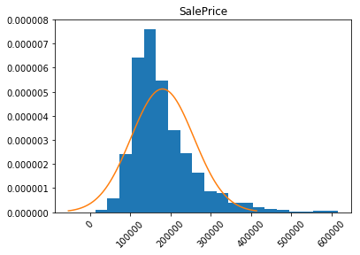

import pandas as pd
import numpy as np
import seaborn as sns
import matplotlib.pyplot as plt
%matplotlib inline
import math
from scipy import stats
from sklearn.model_selection import train_test_split
from sklearn.linear_model import LinearRegression
from sklearn.linear_model import HuberRegressor
from sklearn.preprocessing import StandardScalerHouse prices predictions using machine learning models
The goal of this project was to build several models of varying complexity that can predict house prices. Then, we compare the results.
The dataset contains about 3000 observations (i.e. houses) and 82 attributes. We use the first 2500 observations to fit our models and estimate prices for the 500 others.
Packages
Data set
| Order | PID | MS SubClass | MS Zoning | Lot Frontage | Lot Area | Street | Alley | Lot Shape | Land Contour | ... | Pool Area | Pool QC | Fence | Misc Feature | Misc Val | Mo Sold | Yr Sold | Sale Type | Sale Condition | SalePrice | |
|---|---|---|---|---|---|---|---|---|---|---|---|---|---|---|---|---|---|---|---|---|---|
| 0 | 484 | 528275070 | 60 | RL | NaN | 8795 | Pave | NaN | IR1 | Lvl | ... | 0 | NaN | NaN | NaN | 0 | 4 | 2009 | WD | Normal | 236000 |
| 1 | 2586 | 535305120 | 20 | RL | 75.0 | 10170 | Pave | NaN | Reg | Lvl | ... | 0 | NaN | NaN | NaN | 0 | 6 | 2006 | WD | Normal | 155000 |
| 2 | 2289 | 923228250 | 160 | RM | 21.0 | 2001 | Pave | NaN | Reg | Lvl | ... | 0 | NaN | NaN | NaN | 0 | 1 | 2007 | WD | Normal | 75000 |
| 3 | 142 | 535152150 | 20 | RL | 70.0 | 10552 | Pave | NaN | IR1 | Lvl | ... | 0 | NaN | NaN | NaN | 0 | 4 | 2010 | WD | Normal | 165500 |
| 4 | 2042 | 903475060 | 190 | RM | 60.0 | 10120 | Pave | NaN | IR1 | Bnk | ... | 0 | NaN | MnPrv | NaN | 0 | 1 | 2007 | WD | Normal | 122000 |
5 rows × 82 columns
1. Data cleaning:
<class 'pandas.core.frame.DataFrame'>
RangeIndex: 2430 entries, 0 to 2429
Data columns (total 82 columns):
Order 2430 non-null int64
PID 2430 non-null int64
MS SubClass 2430 non-null int64
MS Zoning 2430 non-null object
Lot Frontage 2010 non-null float64
Lot Area 2430 non-null int64
Street 2430 non-null object
Alley 163 non-null object
Lot Shape 2430 non-null object
Land Contour 2430 non-null object
Utilities 2430 non-null object
Lot Config 2430 non-null object
Land Slope 2430 non-null object
Neighborhood 2430 non-null object
Condition 1 2430 non-null object
Condition 2 2430 non-null object
Bldg Type 2430 non-null object
House Style 2430 non-null object
Overall Qual 2430 non-null int64
Overall Cond 2430 non-null int64
Year Built 2430 non-null int64
Year Remod/Add 2430 non-null int64
Roof Style 2430 non-null object
Roof Matl 2430 non-null object
Exterior 1st 2430 non-null object
Exterior 2nd 2430 non-null object
Mas Vnr Type 2410 non-null object
Mas Vnr Area 2410 non-null float64
Exter Qual 2430 non-null object
Exter Cond 2430 non-null object
Foundation 2430 non-null object
Bsmt Qual 2359 non-null object
Bsmt Cond 2359 non-null object
Bsmt Exposure 2356 non-null object
BsmtFin Type 1 2359 non-null object
BsmtFin SF 1 2429 non-null float64
BsmtFin Type 2 2358 non-null object
BsmtFin SF 2 2429 non-null float64
Bsmt Unf SF 2429 non-null float64
Total Bsmt SF 2429 non-null float64
Heating 2430 non-null object
Heating QC 2430 non-null object
Central Air 2430 non-null object
Electrical 2429 non-null object
1st Flr SF 2430 non-null int64
2nd Flr SF 2430 non-null int64
Low Qual Fin SF 2430 non-null int64
Gr Liv Area 2430 non-null int64
Bsmt Full Bath 2428 non-null float64
Bsmt Half Bath 2428 non-null float64
Full Bath 2430 non-null int64
Half Bath 2430 non-null int64
Bedroom AbvGr 2430 non-null int64
Kitchen AbvGr 2430 non-null int64
Kitchen Qual 2430 non-null object
TotRms AbvGrd 2430 non-null int64
Functional 2430 non-null object
Fireplaces 2430 non-null int64
Fireplace Qu 1244 non-null object
Garage Type 2294 non-null object
Garage Yr Blt 2292 non-null float64
Garage Finish 2292 non-null object
Garage Cars 2429 non-null float64
Garage Area 2429 non-null float64
Garage Qual 2292 non-null object
Garage Cond 2292 non-null object
Paved Drive 2430 non-null object
Wood Deck SF 2430 non-null int64
Open Porch SF 2430 non-null int64
Enclosed Porch 2430 non-null int64
3Ssn Porch 2430 non-null int64
Screen Porch 2430 non-null int64
Pool Area 2430 non-null int64
Pool QC 12 non-null object
Fence 489 non-null object
Misc Feature 90 non-null object
Misc Val 2430 non-null int64
Mo Sold 2430 non-null int64
Yr Sold 2430 non-null int64
Sale Type 2430 non-null object
Sale Condition 2430 non-null object
SalePrice 2430 non-null int64
dtypes: float64(11), int64(28), object(43)
memory usage: 1.5+ MBThe datatype seems correct for every columns except for the first column MS SubClass that should be an object and not an int64. To avoid any confusion, I change the labels of the column the following way:
change = { 20:"a", 30:"b", 40:"c", 45:"d", 50:"e", 60:"f", 70:"g", 75:"h", 80:"i", 85:"j", 90:"k", 120:"l", 150:"m", 160:"n", 180:"o", 190:"p"}
data_df['MS SubClass']= data_df['MS SubClass'].map(change)
data_df['MS SubClass'].head()0 f
1 a
2 n
3 a
4 p
Name: MS SubClass, dtype: objectI delete the two columns Order and PID since they do not provide usefull informations (they are only identifiers).
Duplicated and missing values
I check if there are duplicated values.
There is no duplicated values. I can check now the missing values.
Lot Frontage 420
Alley 2267
Mas Vnr Type 20
Mas Vnr Area 20
Bsmt Qual 71
Bsmt Cond 71
Bsmt Exposure 74
BsmtFin Type 1 71
BsmtFin SF 1 1
BsmtFin Type 2 72
BsmtFin SF 2 1
Bsmt Unf SF 1
Total Bsmt SF 1
Electrical 1
Bsmt Full Bath 2
Bsmt Half Bath 2
Fireplace Qu 1186
Garage Type 136
Garage Yr Blt 138
Garage Finish 138
Garage Cars 1
Garage Area 1
Garage Qual 138
Garage Cond 138
Pool QC 2418
Fence 1941
Misc Feature 2340
dtype: int64For some of these variables, the missing value NaN actually gives us information. For example, for the variable “Alley”, it means that the house does not have an alley. It doesn’t mean that the information is missing. Therefore, we should fill the NaN values with the string NA as indicated in the documentation. In some cases, it is maybe a true missing value, but for most of the cases it should be correct to make this hypothesis.
data_df['Alley'].fillna(value='NA', inplace=True)
data_df['Bsmt Qual'].fillna(value='NA', inplace=True)
data_df['Bsmt Cond'].fillna(value='NA', inplace=True)
data_df['Bsmt Exposure'].fillna(value='NA', inplace=True)
data_df['BsmtFin Type 1'].fillna(value='NA', inplace=True)
data_df['BsmtFin Type 2'].fillna(value='NA', inplace=True)
data_df['Fireplace Qu'].fillna(value='NA', inplace=True)
data_df['Garage Type'].fillna(value='NA', inplace=True)
data_df['Garage Finish'].fillna(value='NA', inplace=True)
data_df['Garage Qual'].fillna(value='NA', inplace=True)
data_df['Garage Cond'].fillna(value='NA', inplace=True)
data_df['Pool QC'].fillna(value='NA', inplace=True)
data_df['Fence'].fillna(value='NA', inplace=True)
data_df['Misc Feature'].fillna(value='NA', inplace=True)col_NA2 = [col for col in data_df.columns if data_df[col].isnull().any()]
data_df[col_NA2].isnull().sum()Lot Frontage 420
Mas Vnr Type 20
Mas Vnr Area 20
BsmtFin SF 1 1
BsmtFin SF 2 1
Bsmt Unf SF 1
Total Bsmt SF 1
Electrical 1
Bsmt Full Bath 2
Bsmt Half Bath 2
Garage Yr Blt 138
Garage Cars 1
Garage Area 1
dtype: int64I decide to delete the rows where there is only 1 or 2 missing values in the variable. It should not impact the overall results of the analysis since we have more than 2000 rows.
col_NA3 = [col for col in data_df.columns if data_df[col].isnull().any()]
data_df[col_NA3].isnull().sum()Lot Frontage 420
Mas Vnr Type 20
Mas Vnr Area 20
Garage Yr Blt 137
dtype: int64For the last 4 ones, we need to investigate the variables one by one.
- Lot Frontage:
60.0 229
80.0 112
70.0 104
50.0 98
75.0 87
65.0 74
85.0 67
63.0 43
78.0 42
24.0 42
90.0 42
68.0 40
21.0 40
64.0 34
72.0 33
74.0 31
52.0 26
73.0 25
100.0 25
62.0 24
51.0 23
55.0 23
79.0 22
82.0 22
57.0 20
66.0 20
40.0 19
76.0 19
59.0 19
44.0 18
...
134.0 2
313.0 2
115.0 2
140.0 2
128.0 2
130.0 2
121.0 2
125.0 2
116.0 2
38.0 2
122.0 2
200.0 1
182.0 1
138.0 1
195.0 1
152.0 1
33.0 1
126.0 1
168.0 1
150.0 1
135.0 1
136.0 1
22.0 1
31.0 1
25.0 1
155.0 1
113.0 1
119.0 1
133.0 1
141.0 1
Name: Lot Frontage, Length: 120, dtype: int64This variable is continuous and measures the linear feet of street connected to property. In order to limit the effects of potential outliers, I decided to fill the missing values by the median value of the varialbe.
- Mas Vnr Type & Mas Vnr Area:
None 1438
BrkFace 736
Stone 210
BrkCmn 21
CBlock 1
Name: Mas Vnr Type, dtype: int640.0 1434
120.0 14
200.0 12
144.0 11
176.0 10
196.0 9
108.0 9
16.0 9
180.0 9
210.0 9
216.0 9
72.0 9
128.0 8
164.0 7
178.0 7
170.0 7
40.0 7
256.0 7
456.0 7
302.0 7
174.0 7
340.0 7
80.0 7
240.0 7
50.0 6
420.0 6
260.0 6
203.0 6
186.0 6
132.0 6
...
528.0 1
53.0 1
1170.0 1
283.0 1
568.0 1
263.0 1
562.0 1
970.0 1
571.0 1
221.0 1
530.0 1
376.0 1
254.0 1
291.0 1
102.0 1
754.0 1
634.0 1
630.0 1
257.0 1
1050.0 1
522.0 1
323.0 1
428.0 1
418.0 1
616.0 1
440.0 1
664.0 1
760.0 1
57.0 1
394.0 1
Name: Mas Vnr Area, Length: 408, dtype: int64We can see that the most common value is None for the type of Masonry and 0 for the area. Let’s check the value of the type when there is a missing value for the Area.
66 NaN
83 NaN
101 NaN
159 NaN
201 NaN
270 NaN
352 NaN
447 NaN
456 NaN
457 NaN
465 NaN
624 NaN
851 NaN
891 NaN
1098 NaN
1480 NaN
1592 NaN
1832 NaN
2137 NaN
2219 NaN
Name: Mas Vnr Type, dtype: objectWhen there is a missing value for the type, there is also a missing value for the area. Therefore I propose to replace the missing values the most common ones: None and 0.
- Garage Yr Blt:
2005.0 114
2007.0 90
2006.0 89
2004.0 84
2003.0 79
1977.0 58
2008.0 54
2002.0 46
1998.0 46
1976.0 45
1999.0 44
2000.0 44
1968.0 42
1993.0 42
1950.0 39
1978.0 38
2001.0 37
1958.0 36
1997.0 35
1954.0 34
1967.0 33
1974.0 33
1965.0 31
1956.0 31
1920.0 31
1959.0 30
1979.0 30
1994.0 30
1969.0 30
1960.0 29
...
1936.0 7
1935.0 7
1922.0 6
1946.0 6
1924.0 6
1928.0 6
1900.0 5
1942.0 5
1927.0 5
1923.0 5
1915.0 5
1932.0 4
1921.0 4
1937.0 4
2010.0 4
1947.0 4
1916.0 4
1982.0 4
1934.0 3
1918.0 2
1931.0 2
1929.0 2
1917.0 2
1914.0 2
2207.0 1
1943.0 1
1933.0 1
1919.0 1
1896.0 1
1908.0 1
Name: Garage Yr Blt, Length: 101, dtype: int64We can therefore replace by the median in these cases.
There is no more missing values.
Inconsistencies in the variables
To check potential inconsistencies, I need to be sure that: - if Bsmt Qual = 0, then Bsmt Cond, Bsmt Exposure, BsmtFin Type 1, BsmtFin Type 2 = NA, and BsmtFin SF 1, BsmtFin SF 2, Bsmt Unf SF, Total Bsmt SF, Bsmt Full Bath, Bsmt Half Bath = 0. - if House style = 1Story, then 2nd Flr SF = 0. - if Fireplaces == 0, then FireplaceQu == NA. - if Garage Type = NA, then Garage Yr Blt, Garage Finish, Garage Qual, Garage Cond = NA, and Garage Cars, Garage Area = 0. - if Pool QC = NA, then Pool Area = 0 (and vice versa). - if Misc Feature = 0, then Misc Val = 0 (and vice versa). - Yr Sold > Year Built - Correct numbers: Lot Frontage, Lot Area, Mas Vnr Area, BsmtFin SF 1, BsmtFin SF 2, Bsmt Unf SF, Total Bsmt SF, 1st Flr SF, 2nd Fr SF, Low Qual Fin SF, Gr Liv Area, Bsmt Full bath, Bsmt Half Bath, Full Bath, Half Bath, Bedroom, Kitchen, TotRmsAbvGrd, Fireplaces, Garage Cars, Garage Area, Wood Deck SF, Open Porch SF, Enclosed Porch, 3-Ssn Porch, Screen Porch, Pool Area, Misc Val, SalePrice - Correct Years: Year Built, Year Remod/Add, Garage Yr Blt, Yr Sold
- Basement
| Bsmt Qual | Bsmt Cond |
|---|
data_df[(data_df['Bsmt Qual' ] == 'NA') & (data_df['Bsmt Exposure']!= 'NA')][['Bsmt Qual','Bsmt Exposure']]| Bsmt Qual | Bsmt Exposure |
|---|
data_df[(data_df['Bsmt Qual' ] == 'NA') & (data_df['BsmtFin Type 1']!= 'NA')][['Bsmt Qual','BsmtFin Type 1']]| Bsmt Qual | BsmtFin Type 1 |
|---|
data_df[(data_df['Bsmt Qual' ] == 'NA') & (data_df['BsmtFin Type 2']!= 'NA')][['Bsmt Qual','BsmtFin Type 2']]| Bsmt Qual | BsmtFin Type 2 |
|---|
data_df[(data_df['Bsmt Qual' ] == 'NA') & (data_df['BsmtFin SF 1']!= 0)][['Bsmt Qual','BsmtFin SF 1']]| Bsmt Qual | BsmtFin SF 1 |
|---|
data_df[(data_df['Bsmt Qual' ] == 'NA') & (data_df['BsmtFin SF 2']!= 0)][['Bsmt Qual','BsmtFin SF 2']]| Bsmt Qual | BsmtFin SF 2 |
|---|
data_df[(data_df['Bsmt Qual' ] == 'NA') & (data_df['Bsmt Unf SF']!= 0)][['Bsmt Qual','Bsmt Unf SF']]| Bsmt Qual | Bsmt Unf SF |
|---|
data_df[(data_df['Bsmt Qual' ] == 'NA') & (data_df['Total Bsmt SF']!= 0)][['Bsmt Qual','Total Bsmt SF']]| Bsmt Qual | Total Bsmt SF |
|---|
data_df[(data_df['Bsmt Qual' ] == 'NA') & (data_df['Bsmt Full Bath']!= 0)][['Bsmt Qual','Bsmt Full Bath']]| Bsmt Qual | Bsmt Full Bath |
|---|
data_df[(data_df['Bsmt Qual' ] == 'NA') & (data_df['Bsmt Half Bath']!= 0)][['Bsmt Qual','Bsmt Half Bath']]| Bsmt Qual | Bsmt Half Bath |
|---|
There is no inconsistency with the basement variables.
- House Style
data_df[(data_df['House Style' ] == '1Story') & (data_df['2nd Flr SF']!= 0)][['House Style','2nd Flr SF']]| House Style | 2nd Flr SF | |
|---|---|---|
| 247 | 1Story | 192 |
| 1136 | 1Story | 467 |
| 1308 | 1Story | 144 |
Since it does not make sense to have the surface of area of the 2nd Floor for an house of one story, I replace the area by 0 in these cases.
- Fireplace
data_df[(data_df['Fireplaces'] == 0) & (data_df['Fireplace Qu']!= 'NA')][['Fireplaces','Fireplace Qu']]| Fireplaces | Fireplace Qu |
|---|
There is no inconsistency with the fireplace variable.
- Garage
data_df[(data_df['Garage Type'] == 'NA') & (data_df['Garage Yr Blt']!= 1978)][['Garage Type','Garage Yr Blt']]| Garage Type | Garage Yr Blt |
|---|
data_df[(data_df['Garage Type'] == 'NA') & (data_df['Garage Finish']!= 'NA')][['Garage Type','Garage Finish']]| Garage Type | Garage Finish |
|---|
data_df[(data_df['Garage Type'] == 'NA') & (data_df['Garage Cars']!= 0)][['Garage Type','Garage Cars']]| Garage Type | Garage Cars |
|---|
data_df[(data_df['Garage Type'] == 'NA') & (data_df['Garage Area']!= 0)][['Garage Type','Garage Area']]| Garage Type | Garage Area |
|---|
data_df[(data_df['Garage Type'] == 'NA') & (data_df['Garage Qual']!= 'NA')][['Garage Type','Garage Qual']]| Garage Type | Garage Qual |
|---|
data_df[(data_df['Garage Type'] == 'NA') & (data_df['Garage Cond']!= 'NA')][['Garage Type','Garage Cond']]| Garage Type | Garage Cond |
|---|
There is no inconsistency with the garage variables.
- Pool
| Pool QC | Pool Area |
|---|
| Pool QC | Pool Area |
|---|
There is no inconsistency with the pool variable.
- Misc
data_df[(data_df['Misc Feature' ] != 'NA') & (data_df['Misc Val']== 0)][['Misc Feature','Misc Val']]| Misc Feature | Misc Val | |
|---|---|---|
| 1690 | Shed | 0 |
| 2012 | Shed | 0 |
data_df[(data_df['Misc Feature' ] == 'NA') & (data_df['Misc Val']!= 0)][['Misc Feature','Misc Val']]| Misc Feature | Misc Val |
|---|
It is unlikely that a shed is worth 0, so I replace the misc feature by NA in these 2 cases.
- Year Built:
| Year Built | Yr Sold | |
|---|---|---|
| 71 | 2008 | 2007 |
Since it does not make sense in this case, I replace the year built by ‘NA’.
- Correct numbers:
data_df[['Lot Frontage',
'Lot Area',
'Mas Vnr Area',
'BsmtFin SF 1',
'BsmtFin SF 2',
'Bsmt Unf SF',
'Total Bsmt SF',
'1st Flr SF',
'2nd Flr SF',
'Low Qual Fin SF',
'Gr Liv Area',
'Bsmt Full Bath',
'Bsmt Half Bath',
'Full Bath',
'Half Bath',
'Bedroom AbvGr',
'Kitchen AbvGr',
'Total Bsmt SF',
'Fireplaces',
'Garage Cars',
'Garage Area',
'Wood Deck SF',
'Open Porch SF',
'Enclosed Porch',
'3Ssn Porch',
'Screen Porch',
'Pool Area',
'Misc Val',
'SalePrice']].describe().T| count | mean | std | min | 25% | 50% | 75% | max | |
|---|---|---|---|---|---|---|---|---|
| Lot Frontage | 2426.0 | 68.965787 | 21.342066 | 21.0 | 60.00 | 68.0 | 78.00 | 313.0 |
| Lot Area | 2426.0 | 10230.875103 | 8326.905693 | 1470.0 | 7482.00 | 9500.0 | 11604.50 | 215245.0 |
| Mas Vnr Area | 2426.0 | 101.322754 | 176.221672 | 0.0 | 0.00 | 0.0 | 164.00 | 1600.0 |
| BsmtFin SF 1 | 2426.0 | 444.267519 | 457.553941 | 0.0 | 0.00 | 375.0 | 737.00 | 5644.0 |
| BsmtFin SF 2 | 2426.0 | 51.136851 | 172.240590 | 0.0 | 0.00 | 0.0 | 0.00 | 1526.0 |
| Bsmt Unf SF | 2426.0 | 556.882523 | 439.734434 | 0.0 | 216.00 | 462.0 | 800.50 | 2336.0 |
| Total Bsmt SF | 2426.0 | 1052.286892 | 444.227724 | 0.0 | 794.25 | 990.0 | 1299.75 | 6110.0 |
| 1st Flr SF | 2426.0 | 1159.114592 | 389.545598 | 334.0 | 880.50 | 1086.0 | 1387.75 | 5095.0 |
| 2nd Flr SF | 2426.0 | 326.251443 | 419.651918 | 0.0 | 0.00 | 0.0 | 698.00 | 2065.0 |
| Low Qual Fin SF | 2426.0 | 4.594394 | 47.254734 | 0.0 | 0.00 | 0.0 | 0.00 | 1064.0 |
| Gr Liv Area | 2426.0 | 1490.291426 | 494.130532 | 334.0 | 1120.00 | 1440.0 | 1740.00 | 5642.0 |
| Bsmt Full Bath | 2426.0 | 0.434460 | 0.528011 | 0.0 | 0.00 | 0.0 | 1.00 | 3.0 |
| Bsmt Half Bath | 2426.0 | 0.060181 | 0.243017 | 0.0 | 0.00 | 0.0 | 0.00 | 2.0 |
| Full Bath | 2426.0 | 1.560181 | 0.547803 | 0.0 | 1.00 | 2.0 | 2.00 | 4.0 |
| Half Bath | 2426.0 | 0.369332 | 0.501165 | 0.0 | 0.00 | 0.0 | 1.00 | 2.0 |
| Bedroom AbvGr | 2426.0 | 2.842127 | 0.816968 | 0.0 | 2.00 | 3.0 | 3.00 | 8.0 |
| Kitchen AbvGr | 2426.0 | 1.042869 | 0.208620 | 0.0 | 1.00 | 1.0 | 1.00 | 3.0 |
| Total Bsmt SF | 2426.0 | 1052.286892 | 444.227724 | 0.0 | 794.25 | 990.0 | 1299.75 | 6110.0 |
| Fireplaces | 2426.0 | 0.595218 | 0.646164 | 0.0 | 0.00 | 1.0 | 1.00 | 4.0 |
| Garage Cars | 2426.0 | 1.762572 | 0.758523 | 0.0 | 1.00 | 2.0 | 2.00 | 4.0 |
| Garage Area | 2426.0 | 472.025556 | 215.824704 | 0.0 | 324.00 | 478.0 | 576.00 | 1488.0 |
| Wood Deck SF | 2426.0 | 93.959604 | 128.173796 | 0.0 | 0.00 | 0.0 | 168.00 | 1424.0 |
| Open Porch SF | 2426.0 | 47.016076 | 66.833834 | 0.0 | 0.00 | 27.0 | 70.00 | 742.0 |
| Enclosed Porch | 2426.0 | 22.244023 | 62.313936 | 0.0 | 0.00 | 0.0 | 0.00 | 1012.0 |
| 3Ssn Porch | 2426.0 | 2.475680 | 24.900553 | 0.0 | 0.00 | 0.0 | 0.00 | 508.0 |
| Screen Porch | 2426.0 | 16.556472 | 56.865103 | 0.0 | 0.00 | 0.0 | 0.00 | 490.0 |
| Pool Area | 2426.0 | 2.405194 | 36.141627 | 0.0 | 0.00 | 0.0 | 0.00 | 800.0 |
| Misc Val | 2426.0 | 56.272465 | 617.165693 | 0.0 | 0.00 | 0.0 | 0.00 | 17000.0 |
| SalePrice | 2426.0 | 180215.640561 | 79615.671593 | 12789.0 | 129000.00 | 160000.0 | 213099.75 | 755000.0 |
There are no negatives numbers and no extreme values. So the data seem consistent here. I will check again the extreme values later.
- Correct years:
| Year Built | Year Remod/Add | Yr Sold | |
|---|---|---|---|
| count | 2426.000000 | 2426.000000 | 2426.000000 |
| mean | 1971.176010 | 1984.232481 | 2007.783594 |
| std | 30.194448 | 20.747941 | 1.312806 |
| min | 1875.000000 | 1950.000000 | 2006.000000 |
| 25% | 1954.000000 | 1966.000000 | 2007.000000 |
| 50% | 1973.000000 | 1993.000000 | 2008.000000 |
| 75% | 2000.000000 | 2003.000000 | 2009.000000 |
| max | 2010.000000 | 2010.000000 | 2010.000000 |
GarageYrBlt = data_df['Garage Yr Blt'].convert_objects(convert_numeric=True)
GarageYrBlt = GarageYrBlt.convert_objects(convert_numeric=True).dropna()
GarageYrBlt.describe()count 2426.000000
mean 1977.877988
std 24.810639
min 1896.000000
25% 1962.000000
50% 1978.000000
75% 2001.000000
max 2207.000000
Name: Garage Yr Blt, dtype: float64| MS SubClass | MS Zoning | Lot Frontage | Lot Area | Street | Alley | Lot Shape | Land Contour | Utilities | Lot Config | ... | Pool Area | Pool QC | Fence | Misc Feature | Misc Val | Mo Sold | Yr Sold | Sale Type | Sale Condition | SalePrice | |
|---|---|---|---|---|---|---|---|---|---|---|---|---|---|---|---|---|---|---|---|---|---|
| 2219 | a | RL | 68.0 | 8298 | Pave | NA | IR1 | HLS | AllPub | Inside | ... | 0 | NA | NA | NA | 0 | 9 | 2007 | New | Partial | 267300 |
1 rows × 80 columns
Since a year of 2207 is not possible, I actually replace this value by the median.
Handle outliers
We can start by the special notes of the documentation that specifies some outliers. The notes recommends to remove any houses with more than 4000 square feet from the data set.
plt.scatter(data_df['Gr Liv Area'],data_df['SalePrice'])
plt.xlabel('Living area in square feet')
plt.ylabel('Sale price in
);Indeed, these datapoints seem to be outliers. I remove them from the dataset.
data_df = data_df[data_df['Gr Liv Area'] < 4000]
plt.scatter(data_df['Gr Liv Area'],data_df['SalePrice'])
plt.xlabel('Living area in square feet')
plt.ylabel('Sale price in
);Now, I can check all the other variables.
cols = data_df.select_dtypes(include=['float64']).columns
cols = cols.append(data_df.select_dtypes(include=['int64']).columns)
fig,axes = plt.subplots(nrows=9,ncols=4,figsize=(16,40))
for col,ax in zip(cols,axes.ravel()):
ax.boxplot(data_df[col],whis=2)
ax.set_title(col)
plt.tight_layout();For some variables, it is better to visualize the boxplots without the 0 values. For example, a 0 value for the variable basement full bath does not necessarily mean no bathrooms. Indeed, it can also mean no basement. I replot these variables to better visualize the outliers.
NoZerosCols = ['Mas Vnr Area','BsmtFin SF 1','BsmtFin SF 2', 'Bsmt Unf SF','Total Bsmt SF','2nd Flr SF','Bsmt Full Bath', 'Bsmt Half Bath'
,'Fireplaces', 'Garage Cars', 'Garage Area','Wood Deck SF','Open Porch SF','Enclosed Porch','3Ssn Porch',
'Screen Porch','Pool Area','Misc Val']
len(NoZerosCols)18fig,axes = plt.subplots(nrows=5,ncols=4,figsize= (20,50))
for col,ax in zip(NoZerosCols,axes.ravel()):
ax.boxplot(data_df[data_df[col] != 0][col])
ax.set_title(col)
plt.tight_layout();From the boxplots, the dataset doesn’t seem to contain outliers or incorrect values. Some values are big but remain consistents with their respective distributions. I will use the Huber regressor later to take that into account. Therefore, I will work with this dataset for the next part of the project.
2. Feature encoding
We basically have 4 types of variables: - continuous variables (e.g. Lot Area) - discrete variables (e.g. Year Built)
- nominal variables (e.g. Type of dwelling) - ordinal variables (e.g. Utilities)
Continuous and discrete variables can remain in this format for the analysis. However, we have a problem for the nominal and ordinal variables.
For the nominal variables, I decide to replace their values with the One-hot encoding transformation. It makes sense because we cannot give an order for this kind of variable. What I mean is that there is no good or bad value. Therefore, creating dummy variables seem to be a good idea for me.
For the ordinal variables, I decide to replace their values by a scale beginning from “1” to “Variable.nunique()”, 1 being the worst value. I will use the value “0” to indicate the absence of the variable.
From the documentation, we can easily distinguish the 4 types of variables.
ContinuousVar = ['Lot Frontage','Lot Area','Mas Vnr Area','BsmtFin SF 1','BsmtFin SF 2','Bsmt Unf SF','Total Bsmt SF','1st Flr SF',
'2nd Flr SF', 'Low Qual Fin SF','Gr Liv Area','Garage Area','Wood Deck SF','Open Porch SF','Enclosed Porch','3Ssn Porch',
'Screen Porch','Pool Area','Misc Val']
DiscreteVar = ['Year Built','Year Remod/Add','Bsmt Full Bath', 'Bsmt Half Bath' ,'Full Bath' ,'Half Bath','Bedroom AbvGr','Kitchen AbvGr'
,'TotRms AbvGrd','Fireplaces','Garage Yr Blt','Garage Cars','Mo Sold','Yr Sold']
NominalVar = ['MS SubClass','MS Zoning','Street','Alley','Land Contour','Lot Config','Neighborhood','Condition 1','Condition 2','Bldg Type'
,'House Style','Roof Style','Roof Matl','Exterior 1st', 'Exterior 2nd','Mas Vnr Type','Foundation','Heating','Central Air',
'Garage Type', 'Misc Feature','Sale Type','Sale Condition']
OrdinalVar = ['Lot Shape','Utilities','Land Slope','Overall Qual','Overall Cond','Exter Qual','Exter Cond','Bsmt Qual','Bsmt Cond',
'Bsmt Exposure','BsmtFin Type 1','BsmtFin Type 2','Heating QC','Electrical','Kitchen Qual','Functional','Fireplace Qu',
'Garage Finish','Garage Qual','Garage Cond','Paved Drive','Pool QC','Fence',]Ordinal variables
Unfortunately, the function unique does not order automatically the values from a feature. It takes the first unique values that comes row by row. So, I have to change the values “by hand”.
data_df[OrdinalVar[0]].replace({'Reg':4, 'IR1':3,'IR2':2,'IR3':1},inplace=True)
data_df[OrdinalVar[1]].replace({'AllPub':4, 'NoSewr':3,'NoSeWa':2,'ELO':1},inplace=True)
data_df[OrdinalVar[2]].replace({ 'Gtl':3,'Mod':2,'Sev':1},inplace=True)
### data_df[OrdinalVar[3]].replace({},inplace=True) (already in a numerical order)
### data_df[OrdinalVar[4]].replace({},inplace=True) (already in a numerical order)
data_df[OrdinalVar[5]].replace({'Ex':5, 'Gd':4, 'TA':3,'Fa':2,'Po':1},inplace=True)
data_df[OrdinalVar[6]].replace({'Ex':5, 'Gd':4, 'TA':3,'Fa':2,'Po':1},inplace=True)
data_df[OrdinalVar[7]].replace({'Ex':5, 'Gd':4, 'TA':3,'Fa':2,'Po':1,'NA':0},inplace=True)
data_df[OrdinalVar[8]].replace({'Ex':5, 'Gd':4, 'TA':3,'Fa':2,'Po':1, 'NA':0},inplace=True)
data_df[OrdinalVar[9]].replace({'Gd':4, 'Av':3,'Mn':2,'No':1, 'NA':0},inplace=True)
data_df[OrdinalVar[10]].replace({'GLQ':6,'ALQ':5, 'BLQ':4, 'Rec':3,'LwQ':2,'Unf':1, 'NA':0},inplace=True)
data_df[OrdinalVar[11]].replace({'GLQ':6,'ALQ':5, 'BLQ':4, 'Rec':3,'LwQ':2,'Unf':1, 'NA':0},inplace=True)
data_df[OrdinalVar[12]].replace({'Ex':5, 'Gd':4, 'TA':3,'Fa':2,'Po':1},inplace=True)
data_df[OrdinalVar[13]].replace({'SBrkr':5, 'FuseA':4, 'FuseF':3,'FuseP':2,'Mix':1},inplace=True)
data_df[OrdinalVar[14]].replace({'Ex':5, 'Gd':4, 'TA':3,'Fa':2,'Po':1},inplace=True)
data_df[OrdinalVar[15]].replace({'Typ':8,'Min1':7,'Min2':6,'Mod':5, 'Maj1':4, 'Maj2':3,'Sev':2,'Sal':1},inplace=True)
data_df[OrdinalVar[16]].replace({'Ex':5, 'Gd':4, 'TA':3,'Fa':2,'Po':1,'NA':0},inplace=True)
data_df[OrdinalVar[17]].replace({'Fin':3,'RFn':2,'Unf':1,'NA':0},inplace=True)
data_df[OrdinalVar[18]].replace({'Ex':5, 'Gd':4, 'TA':3,'Fa':2,'Po':1,'NA':0},inplace=True)
data_df[OrdinalVar[19]].replace({'Ex':5, 'Gd':4, 'TA':3,'Fa':2,'Po':1,'NA':0},inplace=True)
data_df[OrdinalVar[20]].replace({'Y':3,'P':2,'N':1},inplace=True)
data_df[OrdinalVar[21]].replace({'Ex':4, 'Gd':3,'TA':2,'Fa':1,'NA':0},inplace=True)
data_df[OrdinalVar[22]].replace({'GdPrv':4, 'MnPrv':3,'GdWo':2,'MnWw':1,'NA':0},inplace=True)I can verify that everything has been changed correctly:
| Lot Shape | Utilities | Land Slope | Overall Qual | Overall Cond | Exter Qual | Exter Cond | Bsmt Qual | Bsmt Cond | Bsmt Exposure | BsmtFin Type 1 | BsmtFin Type 2 | Heating QC | Electrical | Kitchen Qual | Functional | Fireplace Qu | Garage Finish | Garage Qual | Garage Cond | Paved Drive | Pool QC | Fence | |
|---|---|---|---|---|---|---|---|---|---|---|---|---|---|---|---|---|---|---|---|---|---|---|---|
| 0 | 3 | 4 | 3 | 7 | 5 | 4 | 3 | 4 | 3 | 1 | 6 | 1 | 5 | 5 | 4 | 8 | 3 | 3 | 3 | 3 | 3 | 0 | 0 |
| 1 | 4 | 4 | 3 | 6 | 6 | 3 | 3 | 3 | 3 | 1 | 1 | 1 | 3 | 5 | 4 | 8 | 4 | 1 | 3 | 3 | 3 | 0 | 0 |
| 2 | 4 | 4 | 3 | 4 | 5 | 3 | 3 | 3 | 3 | 1 | 1 | 1 | 2 | 5 | 3 | 8 | 0 | 1 | 3 | 3 | 3 | 0 | 0 |
| 3 | 3 | 4 | 3 | 5 | 5 | 3 | 3 | 3 | 3 | 1 | 3 | 1 | 4 | 5 | 4 | 8 | 4 | 2 | 3 | 3 | 3 | 0 | 0 |
| 4 | 3 | 4 | 3 | 7 | 4 | 2 | 3 | 3 | 3 | 1 | 1 | 1 | 3 | 3 | 3 | 8 | 4 | 1 | 3 | 3 | 1 | 0 | 3 |
Lot Shape True
Utilities True
Land Slope True
Overall Qual True
Overall Cond True
Exter Qual True
Exter Cond True
Bsmt Qual True
Bsmt Cond True
Bsmt Exposure True
BsmtFin Type 1 True
BsmtFin Type 2 True
Heating QC True
Electrical True
Kitchen Qual True
Functional True
Fireplace Qu True
Garage Finish True
Garage Qual True
Garage Cond True
Paved Drive True
Pool QC True
Fence True
dtype: boolEverything seem correct.
Nominal variables
The idea is to create a new variable for each possible value. And to avoid redundance, I drop the first column for each “old variable”.
| Lot Frontage | Lot Area | Lot Shape | Utilities | Land Slope | Overall Qual | Overall Cond | Year Built | Year Remod/Add | Mas Vnr Area | Exter Qual | Exter Cond | Bsmt Qual | Bsmt Cond | Bsmt Exposure | BsmtFin Type 1 | BsmtFin SF 1 | BsmtFin Type 2 | BsmtFin SF 2 | Bsmt Unf SF | Total Bsmt SF | Heating QC | Electrical | 1st Flr SF | 2nd Flr SF | Low Qual Fin SF | Gr Liv Area | Bsmt Full Bath | Bsmt Half Bath | Full Bath | Half Bath | Bedroom AbvGr | Kitchen AbvGr | Kitchen Qual | TotRms AbvGrd | Functional | Fireplaces | Fireplace Qu | Garage Yr Blt | Garage Finish | Garage Cars | Garage Area | Garage Qual | Garage Cond | Paved Drive | Wood Deck SF | Open Porch SF | Enclosed Porch | 3Ssn Porch | Screen Porch | Pool Area | Pool QC | Fence | Misc Val | Mo Sold | Yr Sold | SalePrice | MS SubClass_b | MS SubClass_c | MS SubClass_d | MS SubClass_e | MS SubClass_f | MS SubClass_g | MS SubClass_h | MS SubClass_i | MS SubClass_j | MS SubClass_k | MS SubClass_l | MS SubClass_m | MS SubClass_n | MS SubClass_o | MS SubClass_p | MS Zoning_C (all) | MS Zoning_FV | MS Zoning_I (all) | MS Zoning_RH | MS Zoning_RL | MS Zoning_RM | Street_Pave | Alley_NA | Alley_Pave | Land Contour_HLS | Land Contour_Low | Land Contour_Lvl | Lot Config_CulDSac | Lot Config_FR2 | Lot Config_FR3 | Lot Config_Inside | Neighborhood_Blueste | Neighborhood_BrDale | Neighborhood_BrkSide | Neighborhood_ClearCr | Neighborhood_CollgCr | Neighborhood_Crawfor | Neighborhood_Edwards | Neighborhood_Gilbert | Neighborhood_Greens | Neighborhood_GrnHill | Neighborhood_IDOTRR | Neighborhood_Landmrk | Neighborhood_MeadowV | Neighborhood_Mitchel | Neighborhood_NAmes | Neighborhood_NPkVill | Neighborhood_NWAmes | Neighborhood_NoRidge | Neighborhood_NridgHt | Neighborhood_OldTown | Neighborhood_SWISU | Neighborhood_Sawyer | Neighborhood_SawyerW | Neighborhood_Somerst | Neighborhood_StoneBr | Neighborhood_Timber | Neighborhood_Veenker | Condition 1_Feedr | Condition 1_Norm | Condition 1_PosA | Condition 1_PosN | Condition 1_RRAe | Condition 1_RRAn | Condition 1_RRNe | Condition 1_RRNn | Condition 2_Feedr | Condition 2_Norm | Condition 2_PosA | Condition 2_PosN | Condition 2_RRAe | Condition 2_RRAn | Condition 2_RRNn | Bldg Type_2fmCon | Bldg Type_Duplex | Bldg Type_Twnhs | Bldg Type_TwnhsE | House Style_1.5Unf | House Style_1Story | House Style_2.5Fin | House Style_2.5Unf | House Style_2Story | House Style_SFoyer | House Style_SLvl | Roof Style_Gable | Roof Style_Gambrel | Roof Style_Hip | Roof Style_Mansard | Roof Style_Shed | Roof Matl_Membran | Roof Matl_Metal | Roof Matl_Tar&Grv | Roof Matl_WdShake | Roof Matl_WdShngl | Exterior 1st_AsphShn | Exterior 1st_BrkComm | Exterior 1st_BrkFace | Exterior 1st_CBlock | Exterior 1st_CemntBd | Exterior 1st_HdBoard | Exterior 1st_ImStucc | Exterior 1st_MetalSd | Exterior 1st_Plywood | Exterior 1st_PreCast | Exterior 1st_Stone | Exterior 1st_Stucco | Exterior 1st_VinylSd | Exterior 1st_Wd Sdng | Exterior 1st_WdShing | Exterior 2nd_AsphShn | Exterior 2nd_Brk Cmn | Exterior 2nd_BrkFace | Exterior 2nd_CBlock | Exterior 2nd_CmentBd | Exterior 2nd_HdBoard | Exterior 2nd_ImStucc | Exterior 2nd_MetalSd | Exterior 2nd_Plywood | Exterior 2nd_PreCast | Exterior 2nd_Stone | Exterior 2nd_Stucco | Exterior 2nd_VinylSd | Exterior 2nd_Wd Sdng | Exterior 2nd_Wd Shng | Mas Vnr Type_BrkFace | Mas Vnr Type_CBlock | Mas Vnr Type_NA | Mas Vnr Type_None | Mas Vnr Type_Stone | Foundation_CBlock | Foundation_PConc | Foundation_Slab | Foundation_Stone | Foundation_Wood | Heating_GasA | Heating_GasW | Heating_Grav | Heating_OthW | Heating_Wall | Central Air_Y | Garage Type_Attchd | Garage Type_Basment | Garage Type_BuiltIn | Garage Type_CarPort | Garage Type_Detchd | Garage Type_NA | Misc Feature_NA | Misc Feature_Othr | Misc Feature_Shed | Misc Feature_TenC | Sale Type_CWD | Sale Type_Con | Sale Type_ConLD | Sale Type_ConLI | Sale Type_ConLw | Sale Type_New | Sale Type_Oth | Sale Type_VWD | Sale Type_WD | Sale Condition_AdjLand | Sale Condition_Alloca | Sale Condition_Family | Sale Condition_Normal | Sale Condition_Partial | |
|---|---|---|---|---|---|---|---|---|---|---|---|---|---|---|---|---|---|---|---|---|---|---|---|---|---|---|---|---|---|---|---|---|---|---|---|---|---|---|---|---|---|---|---|---|---|---|---|---|---|---|---|---|---|---|---|---|---|---|---|---|---|---|---|---|---|---|---|---|---|---|---|---|---|---|---|---|---|---|---|---|---|---|---|---|---|---|---|---|---|---|---|---|---|---|---|---|---|---|---|---|---|---|---|---|---|---|---|---|---|---|---|---|---|---|---|---|---|---|---|---|---|---|---|---|---|---|---|---|---|---|---|---|---|---|---|---|---|---|---|---|---|---|---|---|---|---|---|---|---|---|---|---|---|---|---|---|---|---|---|---|---|---|---|---|---|---|---|---|---|---|---|---|---|---|---|---|---|---|---|---|---|---|---|---|---|---|---|---|---|---|---|---|---|---|---|---|---|---|---|---|---|---|---|---|---|---|---|---|---|---|---|---|---|---|---|---|---|---|---|---|---|
| 0 | 68.0 | 8795 | 3 | 4 | 3 | 7 | 5 | 2000 | 2000 | 0.0 | 4 | 3 | 4 | 3 | 1 | 6 | 300.0 | 1 | 0.0 | 652.0 | 952.0 | 5 | 5 | 980 | 1276 | 0 | 2256 | 0.0 | 0.0 | 2 | 1 | 4 | 1 | 4 | 8 | 8 | 1 | 3 | 2000.0 | 3 | 2.0 | 554.0 | 3 | 3 | 3 | 224 | 54 | 0 | 0 | 0 | 0 | 0 | 0 | 0 | 4 | 2009 | 236000 | 0 | 0 | 0 | 0 | 1 | 0 | 0 | 0 | 0 | 0 | 0 | 0 | 0 | 0 | 0 | 0 | 0 | 0 | 0 | 1 | 0 | 1 | 1 | 0 | 0 | 0 | 1 | 0 | 0 | 0 | 1 | 0 | 0 | 0 | 0 | 0 | 0 | 0 | 1 | 0 | 0 | 0 | 0 | 0 | 0 | 0 | 0 | 0 | 0 | 0 | 0 | 0 | 0 | 0 | 0 | 0 | 0 | 0 | 0 | 1 | 0 | 0 | 0 | 0 | 0 | 0 | 0 | 1 | 0 | 0 | 0 | 0 | 0 | 0 | 0 | 0 | 0 | 0 | 0 | 0 | 0 | 1 | 0 | 0 | 1 | 0 | 0 | 0 | 0 | 0 | 0 | 0 | 0 | 0 | 0 | 0 | 0 | 0 | 0 | 0 | 0 | 0 | 0 | 0 | 0 | 0 | 1 | 0 | 0 | 0 | 0 | 0 | 0 | 0 | 0 | 0 | 0 | 0 | 0 | 0 | 0 | 1 | 0 | 0 | 0 | 0 | 0 | 1 | 0 | 0 | 1 | 0 | 0 | 0 | 1 | 0 | 0 | 0 | 0 | 1 | 0 | 0 | 1 | 0 | 0 | 0 | 1 | 0 | 0 | 0 | 0 | 0 | 0 | 0 | 0 | 0 | 0 | 0 | 1 | 0 | 0 | 0 | 1 | 0 |
| 1 | 75.0 | 10170 | 4 | 4 | 3 | 6 | 6 | 1951 | 1951 | 522.0 | 3 | 3 | 3 | 3 | 1 | 1 | 0.0 | 1 | 0.0 | 216.0 | 216.0 | 3 | 5 | 1575 | 0 | 0 | 1575 | 0.0 | 0.0 | 1 | 1 | 2 | 1 | 4 | 5 | 8 | 1 | 4 | 1951.0 | 1 | 2.0 | 400.0 | 3 | 3 | 3 | 0 | 0 | 0 | 0 | 0 | 0 | 0 | 0 | 0 | 6 | 2006 | 155000 | 0 | 0 | 0 | 0 | 0 | 0 | 0 | 0 | 0 | 0 | 0 | 0 | 0 | 0 | 0 | 0 | 0 | 0 | 0 | 1 | 0 | 1 | 1 | 0 | 0 | 0 | 1 | 0 | 0 | 0 | 0 | 0 | 0 | 0 | 0 | 0 | 0 | 0 | 0 | 0 | 0 | 0 | 0 | 0 | 0 | 1 | 0 | 0 | 0 | 0 | 0 | 0 | 0 | 0 | 0 | 0 | 0 | 0 | 0 | 1 | 0 | 0 | 0 | 0 | 0 | 0 | 0 | 1 | 0 | 0 | 0 | 0 | 0 | 0 | 0 | 0 | 0 | 0 | 1 | 0 | 0 | 0 | 0 | 0 | 0 | 0 | 1 | 0 | 0 | 0 | 0 | 0 | 0 | 0 | 0 | 0 | 0 | 0 | 0 | 0 | 0 | 0 | 0 | 0 | 0 | 0 | 0 | 1 | 0 | 0 | 0 | 0 | 0 | 0 | 0 | 0 | 0 | 0 | 0 | 0 | 0 | 0 | 1 | 0 | 1 | 0 | 0 | 0 | 0 | 1 | 0 | 0 | 0 | 0 | 1 | 0 | 0 | 0 | 0 | 1 | 1 | 0 | 0 | 0 | 0 | 0 | 1 | 0 | 0 | 0 | 0 | 0 | 0 | 0 | 0 | 0 | 0 | 0 | 1 | 0 | 0 | 0 | 1 | 0 |
| 2 | 21.0 | 2001 | 4 | 4 | 3 | 4 | 5 | 1970 | 1970 | 80.0 | 3 | 3 | 3 | 3 | 1 | 1 | 0.0 | 1 | 0.0 | 546.0 | 546.0 | 2 | 5 | 546 | 546 | 0 | 1092 | 0.0 | 0.0 | 1 | 1 | 3 | 1 | 3 | 6 | 8 | 0 | 0 | 1970.0 | 1 | 1.0 | 286.0 | 3 | 3 | 3 | 0 | 0 | 0 | 0 | 0 | 0 | 0 | 0 | 0 | 1 | 2007 | 75000 | 0 | 0 | 0 | 0 | 0 | 0 | 0 | 0 | 0 | 0 | 0 | 0 | 1 | 0 | 0 | 0 | 0 | 0 | 0 | 0 | 1 | 1 | 1 | 0 | 0 | 0 | 1 | 0 | 0 | 0 | 1 | 0 | 0 | 0 | 0 | 0 | 0 | 0 | 0 | 0 | 0 | 0 | 0 | 1 | 0 | 0 | 0 | 0 | 0 | 0 | 0 | 0 | 0 | 0 | 0 | 0 | 0 | 0 | 0 | 1 | 0 | 0 | 0 | 0 | 0 | 0 | 0 | 1 | 0 | 0 | 0 | 0 | 0 | 0 | 0 | 1 | 0 | 0 | 0 | 0 | 0 | 1 | 0 | 0 | 1 | 0 | 0 | 0 | 0 | 0 | 0 | 0 | 0 | 0 | 0 | 0 | 0 | 0 | 1 | 0 | 0 | 0 | 0 | 0 | 0 | 0 | 0 | 0 | 0 | 0 | 0 | 0 | 0 | 1 | 0 | 0 | 0 | 0 | 0 | 0 | 0 | 0 | 0 | 0 | 1 | 0 | 0 | 0 | 0 | 1 | 0 | 0 | 0 | 0 | 1 | 0 | 0 | 0 | 0 | 1 | 1 | 0 | 0 | 0 | 0 | 0 | 1 | 0 | 0 | 0 | 0 | 0 | 0 | 0 | 0 | 0 | 0 | 0 | 1 | 0 | 0 | 0 | 1 | 0 |
| 3 | 70.0 | 10552 | 3 | 4 | 3 | 5 | 5 | 1959 | 1959 | 0.0 | 3 | 3 | 3 | 3 | 1 | 3 | 1018.0 | 1 | 0.0 | 380.0 | 1398.0 | 4 | 5 | 1700 | 0 | 0 | 1700 | 0.0 | 1.0 | 1 | 1 | 4 | 1 | 4 | 6 | 8 | 1 | 4 | 1959.0 | 2 | 2.0 | 447.0 | 3 | 3 | 3 | 0 | 38 | 0 | 0 | 0 | 0 | 0 | 0 | 0 | 4 | 2010 | 165500 | 0 | 0 | 0 | 0 | 0 | 0 | 0 | 0 | 0 | 0 | 0 | 0 | 0 | 0 | 0 | 0 | 0 | 0 | 0 | 1 | 0 | 1 | 1 | 0 | 0 | 0 | 1 | 0 | 0 | 0 | 1 | 0 | 0 | 0 | 0 | 0 | 0 | 0 | 0 | 0 | 0 | 0 | 0 | 0 | 0 | 1 | 0 | 0 | 0 | 0 | 0 | 0 | 0 | 0 | 0 | 0 | 0 | 0 | 0 | 1 | 0 | 0 | 0 | 0 | 0 | 0 | 0 | 1 | 0 | 0 | 0 | 0 | 0 | 0 | 0 | 0 | 0 | 0 | 1 | 0 | 0 | 0 | 0 | 0 | 0 | 0 | 1 | 0 | 0 | 0 | 0 | 0 | 0 | 0 | 0 | 0 | 1 | 0 | 0 | 0 | 0 | 0 | 0 | 0 | 0 | 0 | 0 | 0 | 0 | 0 | 0 | 1 | 0 | 0 | 0 | 0 | 0 | 0 | 0 | 0 | 0 | 0 | 0 | 0 | 0 | 0 | 0 | 1 | 0 | 1 | 0 | 0 | 0 | 0 | 1 | 0 | 0 | 0 | 0 | 1 | 1 | 0 | 0 | 0 | 0 | 0 | 1 | 0 | 0 | 0 | 0 | 0 | 0 | 0 | 0 | 0 | 0 | 0 | 1 | 0 | 0 | 0 | 1 | 0 |
| 4 | 60.0 | 10120 | 3 | 4 | 3 | 7 | 4 | 1910 | 1950 | 0.0 | 2 | 3 | 3 | 3 | 1 | 1 | 0.0 | 1 | 0.0 | 925.0 | 925.0 | 3 | 3 | 964 | 925 | 0 | 1889 | 0.0 | 0.0 | 1 | 1 | 4 | 2 | 3 | 9 | 8 | 1 | 4 | 1960.0 | 1 | 1.0 | 308.0 | 3 | 3 | 1 | 0 | 0 | 264 | 0 | 0 | 0 | 0 | 3 | 0 | 1 | 2007 | 122000 | 0 | 0 | 0 | 0 | 0 | 0 | 0 | 0 | 0 | 0 | 0 | 0 | 0 | 0 | 1 | 0 | 0 | 0 | 0 | 0 | 1 | 1 | 1 | 0 | 0 | 0 | 0 | 0 | 0 | 0 | 1 | 0 | 0 | 0 | 0 | 0 | 0 | 0 | 0 | 0 | 0 | 0 | 0 | 0 | 0 | 0 | 0 | 0 | 0 | 0 | 1 | 0 | 0 | 0 | 0 | 0 | 0 | 0 | 1 | 0 | 0 | 0 | 0 | 0 | 0 | 0 | 0 | 1 | 0 | 0 | 0 | 0 | 0 | 1 | 0 | 0 | 0 | 0 | 0 | 0 | 1 | 0 | 0 | 0 | 0 | 0 | 1 | 0 | 0 | 0 | 0 | 0 | 0 | 0 | 0 | 0 | 0 | 0 | 0 | 0 | 0 | 0 | 0 | 0 | 0 | 0 | 0 | 1 | 0 | 0 | 0 | 0 | 0 | 0 | 0 | 0 | 0 | 0 | 0 | 0 | 0 | 0 | 1 | 0 | 0 | 0 | 0 | 1 | 0 | 1 | 0 | 0 | 0 | 0 | 1 | 0 | 0 | 0 | 0 | 0 | 0 | 0 | 0 | 0 | 1 | 0 | 1 | 0 | 0 | 0 | 0 | 0 | 0 | 0 | 0 | 0 | 0 | 0 | 1 | 0 | 0 | 0 | 1 | 0 |
Lot Frontage True
Lot Area True
Lot Shape True
Utilities True
Land Slope True
Overall Qual True
Overall Cond True
Year Built True
Year Remod/Add True
Mas Vnr Area True
Exter Qual True
Exter Cond True
Bsmt Qual True
Bsmt Cond True
Bsmt Exposure True
BsmtFin Type 1 True
BsmtFin SF 1 True
BsmtFin Type 2 True
BsmtFin SF 2 True
Bsmt Unf SF True
Total Bsmt SF True
Heating QC True
Electrical True
1st Flr SF True
2nd Flr SF True
Low Qual Fin SF True
Gr Liv Area True
Bsmt Full Bath True
Bsmt Half Bath True
Full Bath True
Half Bath True
Bedroom AbvGr True
Kitchen AbvGr True
Kitchen Qual True
TotRms AbvGrd True
Functional True
Fireplaces True
Fireplace Qu True
Garage Yr Blt True
Garage Finish True
Garage Cars True
Garage Area True
Garage Qual True
Garage Cond True
Paved Drive True
Wood Deck SF True
Open Porch SF True
Enclosed Porch True
3Ssn Porch True
Screen Porch True
Pool Area True
Pool QC True
Fence True
Misc Val True
Mo Sold True
Yr Sold True
SalePrice True
MS SubClass_b True
MS SubClass_c True
MS SubClass_d True
MS SubClass_e True
MS SubClass_f True
MS SubClass_g True
MS SubClass_h True
MS SubClass_i True
MS SubClass_j True
MS SubClass_k True
MS SubClass_l True
MS SubClass_m True
MS SubClass_n True
MS SubClass_o True
MS SubClass_p True
MS Zoning_C (all) True
MS Zoning_FV True
MS Zoning_I (all) True
MS Zoning_RH True
MS Zoning_RL True
MS Zoning_RM True
Street_Pave True
Alley_NA True
Alley_Pave True
Land Contour_HLS True
Land Contour_Low True
Land Contour_Lvl True
Lot Config_CulDSac True
Lot Config_FR2 True
Lot Config_FR3 True
Lot Config_Inside True
Neighborhood_Blueste True
Neighborhood_BrDale True
Neighborhood_BrkSide True
Neighborhood_ClearCr True
Neighborhood_CollgCr True
Neighborhood_Crawfor True
Neighborhood_Edwards True
Neighborhood_Gilbert True
Neighborhood_Greens True
Neighborhood_GrnHill True
Neighborhood_IDOTRR True
Neighborhood_Landmrk True
Neighborhood_MeadowV True
Neighborhood_Mitchel True
Neighborhood_NAmes True
Neighborhood_NPkVill True
Neighborhood_NWAmes True
Neighborhood_NoRidge True
Neighborhood_NridgHt True
Neighborhood_OldTown True
Neighborhood_SWISU True
Neighborhood_Sawyer True
Neighborhood_SawyerW True
Neighborhood_Somerst True
Neighborhood_StoneBr True
Neighborhood_Timber True
Neighborhood_Veenker True
Condition 1_Feedr True
Condition 1_Norm True
Condition 1_PosA True
Condition 1_PosN True
Condition 1_RRAe True
Condition 1_RRAn True
Condition 1_RRNe True
Condition 1_RRNn True
Condition 2_Feedr True
Condition 2_Norm True
Condition 2_PosA True
Condition 2_PosN True
Condition 2_RRAe True
Condition 2_RRAn True
Condition 2_RRNn True
Bldg Type_2fmCon True
Bldg Type_Duplex True
Bldg Type_Twnhs True
Bldg Type_TwnhsE True
House Style_1.5Unf True
House Style_1Story True
House Style_2.5Fin True
House Style_2.5Unf True
House Style_2Story True
House Style_SFoyer True
House Style_SLvl True
Roof Style_Gable True
Roof Style_Gambrel True
Roof Style_Hip True
Roof Style_Mansard True
Roof Style_Shed True
Roof Matl_Membran True
Roof Matl_Metal True
Roof Matl_Tar&Grv True
Roof Matl_WdShake True
Roof Matl_WdShngl True
Exterior 1st_AsphShn True
Exterior 1st_BrkComm True
Exterior 1st_BrkFace True
Exterior 1st_CBlock True
Exterior 1st_CemntBd True
Exterior 1st_HdBoard True
Exterior 1st_ImStucc True
Exterior 1st_MetalSd True
Exterior 1st_Plywood True
Exterior 1st_PreCast True
Exterior 1st_Stone True
Exterior 1st_Stucco True
Exterior 1st_VinylSd True
Exterior 1st_Wd Sdng True
Exterior 1st_WdShing True
Exterior 2nd_AsphShn True
Exterior 2nd_Brk Cmn True
Exterior 2nd_BrkFace True
Exterior 2nd_CBlock True
Exterior 2nd_CmentBd True
Exterior 2nd_HdBoard True
Exterior 2nd_ImStucc True
Exterior 2nd_MetalSd True
Exterior 2nd_Plywood True
Exterior 2nd_PreCast True
Exterior 2nd_Stone True
Exterior 2nd_Stucco True
Exterior 2nd_VinylSd True
Exterior 2nd_Wd Sdng True
Exterior 2nd_Wd Shng True
Mas Vnr Type_BrkFace True
Mas Vnr Type_CBlock True
Mas Vnr Type_NA True
Mas Vnr Type_None True
Mas Vnr Type_Stone True
Foundation_CBlock True
Foundation_PConc True
Foundation_Slab True
Foundation_Stone True
Foundation_Wood True
Heating_GasA True
Heating_GasW True
Heating_Grav True
Heating_OthW True
Heating_Wall True
Central Air_Y True
Garage Type_Attchd True
Garage Type_Basment True
Garage Type_BuiltIn True
Garage Type_CarPort True
Garage Type_Detchd True
Garage Type_NA True
Misc Feature_NA True
Misc Feature_Othr True
Misc Feature_Shed True
Misc Feature_TenC True
Sale Type_CWD True
Sale Type_Con True
Sale Type_ConLD True
Sale Type_ConLI True
Sale Type_ConLw True
Sale Type_New True
Sale Type_Oth True
Sale Type_VWD True
Sale Type_WD True
Sale Condition_AdjLand True
Sale Condition_Alloca True
Sale Condition_Family True
Sale Condition_Normal True
Sale Condition_Partial True
dtype: bool3. Feature engineering
SalePrice
data_df.hist(column='SalePrice', bins=20, grid=False, xrot=45,density=True)
mu = np.mean(data_df['SalePrice'])
variance = np.var(data_df['SalePrice'])
sigma = math.sqrt(variance)
x = np.linspace(mu - 3*sigma, mu + 3*sigma, 100)
plt.plot(x, stats.norm.pdf(x, mu, sigma))
plt.show()
print('Skewness=', stats.skew(data_df['SalePrice']))
Skewness= 1.6047157543103137As we have seen in the course before (Regularization chapter), “most of the houses in the data set have a price between 100 and 300 thousand dollars. However, there are a few expensive houses with prices well above that. In practice, this can lead to biased models that favor accurate predictions of expensive houses. To avoid building a model that is biased toward more expensive houses, we will apply the logarithm transformation and build a model that predicts the log of the sale price.”
plt.hist(np.log10(data_df.SalePrice), bins=20,density=True)
mu = np.mean(np.log10(data_df['SalePrice']))
variance = np.var(np.log10(data_df['SalePrice']))
sigma = math.sqrt(variance)
x = np.linspace(mu - 3*sigma, mu + 3*sigma, 100)
plt.plot(x, stats.norm.pdf(x, mu, sigma))
plt.xlabel('log10(SalePrice)')
plt.show()
print('Skewness=', stats.skew(np.log(data_df['SalePrice'])))Skewness= -0.09232378345258598Features
First, let’s have a look at the general shape of all the features in order to have a good overview.
- Conitnuous variables:
fig,axes = plt.subplots(nrows=5,ncols=4,figsize=(16,20))
for col,ax in zip(ContinuousVar,axes.ravel()):
if col in NoZerosCols:
mu = np.mean(data_df[data_df[col]!=0][col])
variance = np.var(data_df[data_df[col]!=0][col])
sigma = math.sqrt(variance)
x = np.linspace(mu - 3*sigma, mu + 3*sigma, 100)
ax.hist(data_df[data_df[col]!=0][col],density=1)
ax.plot(x, stats.norm.pdf(x, mu, sigma))
ax.set_title(col +str(' / Skew= ')+ str(round(stats.skew(data_df[data_df[col]!=0][col]),1) ) )
else:
mu = np.mean(data_df[col])
variance = np.var(data_df[col])
sigma = math.sqrt(variance)
x = np.linspace(mu - 3*sigma, mu + 3*sigma, 100)
ax.hist(data_df[col],density=1)
ax.plot(x, stats.norm.pdf(x, mu, sigma))
ax.set_title(col +str(' / Skew= ')+ str(round(stats.skew(data_df[col]),1) ))
plt.tight_layout();We can see that almost all continuous variables are also skewed. Therefore, I also apply a logarithmic transformation to counter this problem:
fig,axes = plt.subplots(nrows=5,ncols=4,figsize=(16,20))
for col,ax in zip(ContinuousVar,axes.ravel()):
if col in NoZerosCols:
mu = np.mean(np.log(data_df[data_df[col]!=0][col]))
variance = np.var(np.log(data_df[data_df[col]!=0][col]))
sigma = math.sqrt(variance)
x = np.linspace(mu - 3*sigma, mu + 3*sigma, 100)
ax.hist(np.log(data_df[data_df[col]!=0][col]),density=1)
ax.plot(x, stats.norm.pdf(x, mu, sigma))
ax.set_title(col +str(' / Skew= ')+ str(round(stats.skew(np.log(data_df[data_df[col]!=0][col])),1) ) )
elif col =='Low Qual Fin SF':
mu = np.mean(np.log1p(data_df[col]))
variance = np.var(np.log1p(data_df[col]))
sigma = math.sqrt(variance)
x = np.linspace(mu - 3*sigma, mu + 3*sigma, 100)
ax.hist(np.log1p(data_df[col]),density=1)
ax.plot(x, stats.norm.pdf(x, mu, sigma))
ax.set_title(col +str(' / Skew= ')+ str(round(stats.skew(np.log1p(data_df[col])),1) ))
else:
mu = np.mean(np.log(data_df[col]))
variance = np.var(np.log(data_df[col]))
sigma = math.sqrt(variance)
x = np.linspace(mu - 3*sigma, mu + 3*sigma, 100)
ax.hist(np.log(data_df[col]),density=1)
ax.plot(x, stats.norm.pdf(x, mu, sigma))
ax.set_title(col +str(' / Skew= ')+ str(round(stats.skew(np.log(data_df[col])),1) ))
plt.tight_layout();As mentioned in the solution of the Regularization exercise, I have to add 1 to the log for the 0 values. Otherwise, I get this error: “ValueError: supplied range of [-inf, 6.96979066990159] is not finite” for the column “Low Qual Fin SF”.
data_df = data_df.rename(columns={'Lot Frontage':'log_Lot Frontage',
'Lot Area':'log_Lot Area',
'Mas Vnr Area':'log_Mas Vnr Area',
'BsmtFin SF 1':'log_BsmtFin SF 1',
'BsmtFin SF 2':'log_BsmtFin SF 2',
'Bsmt Unf SF':'log_Bsmt Unf SF',
'Total Bsmt SF':'log_Total Bsmt SF',
'1st Flr SF':'log_1st Flr SF',
'2nd Flr SF':'log_2nd Flr SF',
'Low Qual Fin SF':'log_Low Qual Fin SF',
'Gr Liv Area':'log_Gr Liv Area',
'Garage Area':'log_Garage Area',
'Wood Deck SF':'log_Wood Deck SF',
'Open Porch SF':'log_Open Porch SF',
'Enclosed Porch':'log_Enclosed Porch',
'3Ssn Porch':'log_3Ssn Porch',
'Screen Porch':'log_Screen Porch',
'Pool Area':'log_Pool Area',
'Misc Val':'log_Misc Val'})| log_Lot Frontage | log_Lot Area | Lot Shape | Utilities | Land Slope | Overall Qual | Overall Cond | Year Built | Year Remod/Add | log_Mas Vnr Area | Exter Qual | Exter Cond | Bsmt Qual | Bsmt Cond | Bsmt Exposure | BsmtFin Type 1 | log_BsmtFin SF 1 | BsmtFin Type 2 | log_BsmtFin SF 2 | log_Bsmt Unf SF | log_Total Bsmt SF | Heating QC | Electrical | log_1st Flr SF | log_2nd Flr SF | log_Low Qual Fin SF | log_Gr Liv Area | Bsmt Full Bath | Bsmt Half Bath | Full Bath | Half Bath | Bedroom AbvGr | Kitchen AbvGr | Kitchen Qual | TotRms AbvGrd | Functional | Fireplaces | Fireplace Qu | Garage Yr Blt | Garage Finish | Garage Cars | log_Garage Area | Garage Qual | Garage Cond | Paved Drive | log_Wood Deck SF | log_Open Porch SF | log_Enclosed Porch | log_3Ssn Porch | log_Screen Porch | log_Pool Area | Pool QC | Fence | log_Misc Val | Mo Sold | Yr Sold | SalePrice | MS SubClass_b | MS SubClass_c | MS SubClass_d | MS SubClass_e | MS SubClass_f | MS SubClass_g | MS SubClass_h | MS SubClass_i | MS SubClass_j | MS SubClass_k | MS SubClass_l | MS SubClass_m | MS SubClass_n | MS SubClass_o | MS SubClass_p | MS Zoning_C (all) | MS Zoning_FV | MS Zoning_I (all) | MS Zoning_RH | MS Zoning_RL | MS Zoning_RM | Street_Pave | Alley_NA | Alley_Pave | Land Contour_HLS | Land Contour_Low | Land Contour_Lvl | Lot Config_CulDSac | Lot Config_FR2 | Lot Config_FR3 | Lot Config_Inside | Neighborhood_Blueste | Neighborhood_BrDale | Neighborhood_BrkSide | Neighborhood_ClearCr | Neighborhood_CollgCr | Neighborhood_Crawfor | Neighborhood_Edwards | Neighborhood_Gilbert | Neighborhood_Greens | Neighborhood_GrnHill | Neighborhood_IDOTRR | Neighborhood_Landmrk | Neighborhood_MeadowV | Neighborhood_Mitchel | Neighborhood_NAmes | Neighborhood_NPkVill | Neighborhood_NWAmes | Neighborhood_NoRidge | Neighborhood_NridgHt | Neighborhood_OldTown | Neighborhood_SWISU | Neighborhood_Sawyer | Neighborhood_SawyerW | Neighborhood_Somerst | Neighborhood_StoneBr | Neighborhood_Timber | Neighborhood_Veenker | Condition 1_Feedr | Condition 1_Norm | Condition 1_PosA | Condition 1_PosN | Condition 1_RRAe | Condition 1_RRAn | Condition 1_RRNe | Condition 1_RRNn | Condition 2_Feedr | Condition 2_Norm | Condition 2_PosA | Condition 2_PosN | Condition 2_RRAe | Condition 2_RRAn | Condition 2_RRNn | Bldg Type_2fmCon | Bldg Type_Duplex | Bldg Type_Twnhs | Bldg Type_TwnhsE | House Style_1.5Unf | House Style_1Story | House Style_2.5Fin | House Style_2.5Unf | House Style_2Story | House Style_SFoyer | House Style_SLvl | Roof Style_Gable | Roof Style_Gambrel | Roof Style_Hip | Roof Style_Mansard | Roof Style_Shed | Roof Matl_Membran | Roof Matl_Metal | Roof Matl_Tar&Grv | Roof Matl_WdShake | Roof Matl_WdShngl | Exterior 1st_AsphShn | Exterior 1st_BrkComm | Exterior 1st_BrkFace | Exterior 1st_CBlock | Exterior 1st_CemntBd | Exterior 1st_HdBoard | Exterior 1st_ImStucc | Exterior 1st_MetalSd | Exterior 1st_Plywood | Exterior 1st_PreCast | Exterior 1st_Stone | Exterior 1st_Stucco | Exterior 1st_VinylSd | Exterior 1st_Wd Sdng | Exterior 1st_WdShing | Exterior 2nd_AsphShn | Exterior 2nd_Brk Cmn | Exterior 2nd_BrkFace | Exterior 2nd_CBlock | Exterior 2nd_CmentBd | Exterior 2nd_HdBoard | Exterior 2nd_ImStucc | Exterior 2nd_MetalSd | Exterior 2nd_Plywood | Exterior 2nd_PreCast | Exterior 2nd_Stone | Exterior 2nd_Stucco | Exterior 2nd_VinylSd | Exterior 2nd_Wd Sdng | Exterior 2nd_Wd Shng | Mas Vnr Type_BrkFace | Mas Vnr Type_CBlock | Mas Vnr Type_NA | Mas Vnr Type_None | Mas Vnr Type_Stone | Foundation_CBlock | Foundation_PConc | Foundation_Slab | Foundation_Stone | Foundation_Wood | Heating_GasA | Heating_GasW | Heating_Grav | Heating_OthW | Heating_Wall | Central Air_Y | Garage Type_Attchd | Garage Type_Basment | Garage Type_BuiltIn | Garage Type_CarPort | Garage Type_Detchd | Garage Type_NA | Misc Feature_NA | Misc Feature_Othr | Misc Feature_Shed | Misc Feature_TenC | Sale Type_CWD | Sale Type_Con | Sale Type_ConLD | Sale Type_ConLI | Sale Type_ConLw | Sale Type_New | Sale Type_Oth | Sale Type_VWD | Sale Type_WD | Sale Condition_AdjLand | Sale Condition_Alloca | Sale Condition_Family | Sale Condition_Normal | Sale Condition_Partial | log_SalePrice | |
|---|---|---|---|---|---|---|---|---|---|---|---|---|---|---|---|---|---|---|---|---|---|---|---|---|---|---|---|---|---|---|---|---|---|---|---|---|---|---|---|---|---|---|---|---|---|---|---|---|---|---|---|---|---|---|---|---|---|---|---|---|---|---|---|---|---|---|---|---|---|---|---|---|---|---|---|---|---|---|---|---|---|---|---|---|---|---|---|---|---|---|---|---|---|---|---|---|---|---|---|---|---|---|---|---|---|---|---|---|---|---|---|---|---|---|---|---|---|---|---|---|---|---|---|---|---|---|---|---|---|---|---|---|---|---|---|---|---|---|---|---|---|---|---|---|---|---|---|---|---|---|---|---|---|---|---|---|---|---|---|---|---|---|---|---|---|---|---|---|---|---|---|---|---|---|---|---|---|---|---|---|---|---|---|---|---|---|---|---|---|---|---|---|---|---|---|---|---|---|---|---|---|---|---|---|---|---|---|---|---|---|---|---|---|---|---|---|---|---|---|---|---|---|
| 0 | 4.234107 | 9.082052 | 3 | 4 | 3 | 7 | 5 | 2000 | 2000 | 0.0 | 4 | 3 | 4 | 3 | 1 | 6 | 5.70711 | 1 | 0.0 | 6.481577 | 6.859615 | 5 | 5 | 6.888572 | 7.152269 | 0.0 | 7.721792 | 0.0 | 0.0 | 2 | 1 | 4 | 1 | 4 | 8 | 8 | 1 | 3 | 2000.0 | 3 | 2.0 | 6.318968 | 3 | 3 | 3 | 5.4161 | 4.007333 | 0.0 | 0.0 | 0.0 | 0.0 | 0 | 0 | 0.0 | 4 | 2009 | 236000 | 0 | 0 | 0 | 0 | 1 | 0 | 0 | 0 | 0 | 0 | 0 | 0 | 0 | 0 | 0 | 0 | 0 | 0 | 0 | 1 | 0 | 1 | 1 | 0 | 0 | 0 | 1 | 0 | 0 | 0 | 1 | 0 | 0 | 0 | 0 | 0 | 0 | 0 | 1 | 0 | 0 | 0 | 0 | 0 | 0 | 0 | 0 | 0 | 0 | 0 | 0 | 0 | 0 | 0 | 0 | 0 | 0 | 0 | 0 | 1 | 0 | 0 | 0 | 0 | 0 | 0 | 0 | 1 | 0 | 0 | 0 | 0 | 0 | 0 | 0 | 0 | 0 | 0 | 0 | 0 | 0 | 1 | 0 | 0 | 1 | 0 | 0 | 0 | 0 | 0 | 0 | 0 | 0 | 0 | 0 | 0 | 0 | 0 | 0 | 0 | 0 | 0 | 0 | 0 | 0 | 0 | 1 | 0 | 0 | 0 | 0 | 0 | 0 | 0 | 0 | 0 | 0 | 0 | 0 | 0 | 0 | 1 | 0 | 0 | 0 | 0 | 0 | 1 | 0 | 0 | 1 | 0 | 0 | 0 | 1 | 0 | 0 | 0 | 0 | 1 | 0 | 0 | 1 | 0 | 0 | 0 | 1 | 0 | 0 | 0 | 0 | 0 | 0 | 0 | 0 | 0 | 0 | 0 | 1 | 0 | 0 | 0 | 1 | 0 | 12.371591 |
Now let’s plot these variables with respect to the sale price.
fig,axes = plt.subplots(nrows=5,ncols=4,figsize=(16,20))
for col,ax in zip(ContinuousVar,axes.ravel()):
ax.scatter(data_df[str('log_')+col],data_df['SalePrice'])
ax.set_title(col+str(' Versus SalePrice'))From what I see, we could maybe create the following dummy variables: - 0 if no basement, 1 otherwise - 0 if no pool, 1 otherwise - 0 if no masonry, 1 otherwise -( Garage is handled in next section)
- Discrete variables:
As I did it before for continuous before, let’s plot the discrete variables to have an overview of the data.
fig,axes = plt.subplots(nrows=4,ncols=4,figsize=(20,20))
for col,ax in zip(DiscreteVar,axes.ravel()):
ax.scatter(data_df[col],data_df['SalePrice'])
ax.set_title(col+str(' Versus SalePrice'))From what I see, we could maybe create the following dummy variables: - 0 if YearBuilt below threshold, 1 otherwise - 0 if Garage Cars = 0 (no garage), 1 otherwise
YearBuiltBelow1980 = data_df[data_df['Year Built']<1980]
YearBuiltAbove1980 = data_df[data_df['Year Built']>=1980]
fig, ax = plt.subplots(figsize = (8,8))
YearBuiltBelow1980['SalePrice'].plot(kind="hist",density=True,bins=30,color='orange',alpha=0.2,label='<1980')
YearBuiltAbove1980['SalePrice'].plot(kind="hist",density=True,bins=30,color='blue',alpha=0.2,label='>1980')
ax.legend(loc='upper right')
YearBuiltBelow1980['SalePrice'].plot(kind="kde",color='orange')
YearBuiltAbove1980['SalePrice'].plot(kind="kde",color='blue')
ax.set_xlim(0, 600000)
ax.set_title('Sale Price distribution depending of the Sold Year')
plt.show()| Year Built | Year Built Above 1980 | Year Built Below 1980 | |
|---|---|---|---|
| 0 | 2000 | 1 | 0 |
| 1 | 1951 | 0 | 1 |
| 2 | 1970 | 0 | 1 |
print(str('The mean of the sale price for houses without garage is:'), round(np.mean(data_df[data_df['Garage Cars'] == 0]['SalePrice'])))
print(str('The mean of the sale price for houses with a garage is:'), round(np.mean(data_df[data_df['Garage Cars'] != 0]['SalePrice'])))The mean of the sale price for houses without garage is: 105693.0
The mean of the sale price for houses with a garage is: 184158.0| House with Garage | House without Garage | |
|---|---|---|
| 0 | 1 | 0 |
| 1 | 1 | 0 |
| 2 | 1 | 0 |
- Nominal variables:
Nominal variables have already been encoded with dummy variabbles. (see section above)
- Ordinal variables:
fig,axes = plt.subplots(nrows=6,ncols=4,figsize=(25,30))
for col,axis in zip(OrdinalVar,axes.ravel()):
g = sns.catplot(x=col,y='SalePrice',data=data_df,ax=axis,kind='box')
plt.close()I think these ordinal variables are fine like that. They do not need a particular encoding. However, this grid shows us big differences in the quality variables (Overall Qual, Ext Qual etc.).
4. Model fitting
- Simple model:
For this model, I take as features the two most correlated variables with the SalePrice variable. Taking these variables make sense since it should indirectly lead to better results.
log_SalePrice 1.000000
SalePrice 0.947413
Overall Qual 0.828522
log_Gr Liv Area 0.721594
Garage Cars 0.670633
Kitchen Qual 0.661810
Bsmt Qual 0.638555
log_1st Flr SF 0.620696
Year Built Above 1980 0.619973
Year Built 0.619094
Garage Finish 0.592214
Year Remod/Add 0.582110
Full Bath 0.569508
Name: log_SalePrice, dtype: float64First, let’s create the baseline.
mae_baseline = MAE(np.exp(y_te_simple), np.exp(np.median(y_tr_simple)))
print('MAE Baseline: {:.5f}'.format(mae_baseline))MAE Baseline: 54856.93064As stated before, I use the Huber regressor since I did not take out potential outliers.
huber = HuberRegressor(epsilon=1.45)
huber.fit(X_tr_simple, y_tr_simple)
y_pred_huber_simple = huber.predict(X_te_simple)
mae_huber = MAE(np.exp(y_te_simple), np.exp(y_pred_huber_simple))
print('MAE Huber: {:.5f}'.format(mae_huber))MAE Huber: 24722.31174plt.bar([1, 2, ], [mae_baseline, mae_huber])
plt.xticks([1, 2,], ['MAE Baseline', 'MAE Huber'])
plt.show()- Intermediate model:
huber = HuberRegressor(epsilon=1.45)
huber.fit(X_tr_intermediate, y_tr_intermediate)
y_pred_huber_intermediate = huber.predict(X_te_intermediate)
mae_huber2 = MAE(np.exp(y_te_intermediate), np.exp(y_pred_huber_intermediate))
print('MAE Huber: {:.5f}'.format(mae_huber2))MAE Huber: 19353.02712plt.bar([1, 2, 3], [mae_baseline, mae_huber,mae_huber2])
plt.xticks([1, 2,3], ['MAE Baseline', 'MAE Huber 2 var','MAE Huber 10 var'])
plt.show()- Complex model:
huber = HuberRegressor(epsilon=1.45)
huber.fit(X_tr_complex, y_tr_complex)
y_pred_huber_complex = huber.predict(X_te_complex)
mae_huber3 = MAE(np.exp(y_te_complex), np.exp(y_pred_huber_complex))
print('MAE Huber: {:.5f}'.format(mae_huber3))MAE Huber: 38596.51255plt.figure(figsize=(10,6))
plt.bar([1, 2, 3,4], [mae_baseline, mae_huber,mae_huber2, mae_huber3],align='center')
plt.xticks([1, 2,3,4], ['MAE Baseline', 'MAE Huber 2 var','MAE Huber 10 var','MAE Huber All var'])
plt.show()The best model is the one with 10 variables which is slightly better than the one with only 2 variables.
5. Regularization
We first standardize our data.
Then, we can apply our ridge regression and plot the validation curve.
from sklearn.metrics import mean_squared_error as MSE
from sklearn.metrics import mean_absolute_error as MAE
from sklearn.linear_model import Ridge
gs_results = []
for alpha in np.logspace(-1, 4, num=20):
ridge = Ridge(alpha=alpha)
ridge.fit(X_tr_rescaled, y_tr_complex)
gs_results.append({
'model': ridge,
'alpha': alpha,
'train_mse': MSE(y_tr_complex, ridge.predict(X_tr_rescaled)),
'train_mae': MAE(np.exp(y_tr_complex), np.exp(ridge.predict(X_tr_rescaled))),
'test_mse': MSE(y_te_complex, ridge.predict(X_te_rescaled)),
'test_mae': MAE(np.exp(y_te_complex), np.exp(ridge.predict(X_te_rescaled))),
})
gs_results = pd.DataFrame(gs_results)
plt.plot(np.log10(gs_results['alpha']), gs_results['train_mse'], label='train curve')
plt.plot(np.log10(gs_results['alpha']), gs_results['test_mse'], label='test curve')
best_result = gs_results.loc[gs_results.test_mse.idxmin()]
plt.scatter(np.log10(best_result.alpha), best_result.test_mse, marker='x', c='red', zorder=10)
plt.title('Best alpha: {:.1e} - mse: {:.4f} mae: {:,.0f}
.format(
best_result.alpha, best_result.test_mse, best_result.test_mae))
plt.xlabel('$log_{10}(alpha)
)
plt.ylabel('MSE')
plt.legend()
plt.show()alpha 78.476
model Ridge(alpha=78.47599703514607, copy_X=True, fi...
test_mae 14061.5
test_mse 0.0145549
train_mae 12342.5
train_mse 0.0106063
Name: 11, dtype: object6. Communicating the results
As we can see on the barplot above, the best model in terms of MAE in the complex one with the ridge regression. This model has a MAE of 14’062$, which seems to be a good result. We can really see the importance of the ridge regression. It improves a lot the model and allows to fight against overfitting of the complex model (the one including all variables).
7. Compute predictions
| Order | PID | MS SubClass | MS Zoning | Lot Frontage | Lot Area | Street | Alley | Lot Shape | Land Contour | Utilities | Lot Config | Land Slope | Neighborhood | Condition 1 | Condition 2 | Bldg Type | House Style | Overall Qual | Overall Cond | Year Built | Year Remod/Add | Roof Style | Roof Matl | Exterior 1st | Exterior 2nd | Mas Vnr Type | Mas Vnr Area | Exter Qual | Exter Cond | Foundation | Bsmt Qual | Bsmt Cond | Bsmt Exposure | BsmtFin Type 1 | BsmtFin SF 1 | BsmtFin Type 2 | BsmtFin SF 2 | Bsmt Unf SF | Total Bsmt SF | Heating | Heating QC | Central Air | Electrical | 1st Flr SF | 2nd Flr SF | Low Qual Fin SF | Gr Liv Area | Bsmt Full Bath | Bsmt Half Bath | Full Bath | Half Bath | Bedroom AbvGr | Kitchen AbvGr | Kitchen Qual | TotRms AbvGrd | Functional | Fireplaces | Fireplace Qu | Garage Type | Garage Yr Blt | Garage Finish | Garage Cars | Garage Area | Garage Qual | Garage Cond | Paved Drive | Wood Deck SF | Open Porch SF | Enclosed Porch | 3Ssn Porch | Screen Porch | Pool Area | Pool QC | Fence | Misc Feature | Misc Val | Mo Sold | Yr Sold | Sale Type | Sale Condition | |
|---|---|---|---|---|---|---|---|---|---|---|---|---|---|---|---|---|---|---|---|---|---|---|---|---|---|---|---|---|---|---|---|---|---|---|---|---|---|---|---|---|---|---|---|---|---|---|---|---|---|---|---|---|---|---|---|---|---|---|---|---|---|---|---|---|---|---|---|---|---|---|---|---|---|---|---|---|---|---|---|---|---|
| 0 | 2217 | 909279080 | 50 | RL | NaN | 11275 | Pave | NaN | IR1 | HLS | AllPub | Corner | Mod | Crawfor | Norm | Norm | 1Fam | 1.5Fin | 6 | 7 | 1932 | 1950 | Gable | CompShg | MetalSd | MetalSd | BrkFace | 480.0 | TA | TA | CBlock | TA | TA | Mn | Rec | 297.0 | LwQ | 557.0 | 0.0 | 854.0 | GasA | TA | Y | SBrkr | 1096 | 895 | 0 | 1991 | 0.0 | 0.0 | 1 | 1 | 3 | 1 | TA | 7 | Typ | 1 | Gd | Detchd | 1977.0 | Unf | 2.0 | 432.0 | TA | Fa | Y | 0 | 0 | 19 | 0 | 0 | 0 | NaN | NaN | NaN | 0 | 3 | 2007 | WD | Normal |
| 1 | 837 | 907126050 | 20 | RL | 65.0 | 9757 | Pave | NaN | Reg | Low | AllPub | Inside | Mod | CollgCr | Norm | Norm | 1Fam | 1Story | 5 | 7 | 1994 | 1994 | Gable | CompShg | VinylSd | VinylSd | None | 0.0 | TA | Gd | PConc | TA | TA | No | ALQ | 755.0 | Unf | 0.0 | 235.0 | 990.0 | GasA | Ex | Y | SBrkr | 990 | 0 | 0 | 990 | 1.0 | 0.0 | 1 | 0 | 3 | 1 | TA | 5 | Typ | 0 | NaN | Attchd | 1995.0 | RFn | 1.0 | 440.0 | TA | TA | Y | 66 | 0 | 0 | 0 | 92 | 0 | NaN | NaN | NaN | 0 | 10 | 2009 | WD | Normal |
| 2 | 2397 | 528144030 | 60 | RL | 86.0 | 11065 | Pave | NaN | IR1 | Lvl | AllPub | Inside | Gtl | NridgHt | Norm | Norm | 1Fam | 2Story | 8 | 5 | 2006 | 2006 | Gable | CompShg | VinylSd | VinylSd | Stone | 788.0 | Gd | TA | PConc | Gd | TA | Mn | Unf | 0.0 | Unf | 0.0 | 1085.0 | 1085.0 | GasA | Ex | Y | SBrkr | 1120 | 850 | 0 | 1970 | 0.0 | 0.0 | 2 | 1 | 3 | 1 | Ex | 8 | Typ | 1 | Gd | BuiltIn | 2006.0 | Fin | 3.0 | 753.0 | TA | TA | Y | 177 | 74 | 0 | 0 | 0 | 0 | NaN | NaN | NaN | 0 | 10 | 2006 | New | Partial |
| 3 | 1963 | 535452060 | 20 | RL | 70.0 | 7000 | Pave | NaN | Reg | Lvl | AllPub | Inside | Gtl | NAmes | Norm | Norm | 1Fam | 1Story | 5 | 7 | 1960 | 2002 | Gable | CompShg | Wd Sdng | Wd Sdng | BrkFace | 45.0 | TA | TA | CBlock | TA | TA | No | Rec | 588.0 | Unf | 0.0 | 422.0 | 1010.0 | GasA | Ex | Y | SBrkr | 1134 | 0 | 0 | 1134 | 0.0 | 0.0 | 1 | 0 | 2 | 1 | TA | 6 | Typ | 0 | NaN | Attchd | 1960.0 | RFn | 1.0 | 254.0 | TA | TA | Y | 0 | 16 | 0 | 0 | 0 | 0 | NaN | MnWw | NaN | 0 | 4 | 2007 | WD | Family |
| 4 | 306 | 911202100 | 50 | C (all) | 66.0 | 8712 | Pave | Pave | Reg | HLS | AllPub | Inside | Mod | IDOTRR | Norm | Norm | 1Fam | 1.5Fin | 4 | 7 | 1900 | 1950 | Gable | CompShg | MetalSd | MetalSd | None | 0.0 | TA | TA | Stone | TA | TA | Mn | Unf | 0.0 | Unf | 0.0 | 859.0 | 859.0 | GasA | Gd | Y | SBrkr | 859 | 319 | 0 | 1178 | 0.0 | 0.0 | 1 | 0 | 2 | 1 | TA | 7 | Typ | 0 | NaN | Detchd | 1964.0 | RFn | 1.0 | 384.0 | TA | TA | N | 68 | 0 | 98 | 0 | 0 | 0 | NaN | NaN | NaN | 0 | 1 | 2010 | WD | Abnorml |
Before computing the predictions, I need to preprocess the data again: checking missing values, duplicated values, feature encoding, feature engineering etc. To remain consistent, I will apply the same methods than I did for the first part of the project.
Data cleaning:
change = { 20:"a", 30:"b", 40:"c", 45:"d", 50:"e", 60:"f", 70:"g", 75:"h", 80:"i", 85:"j", 90:"k", 120:"l", 150:"m", 160:"n", 180:"o", 190:"p"}
test_df['MS SubClass']= test_df['MS SubClass'].map(change)
test_df['MS SubClass'].head()0 e
1 a
2 f
3 a
4 e
Name: MS SubClass, dtype: objectLot Frontage 70
Alley 465
Mas Vnr Type 3
Mas Vnr Area 3
Bsmt Qual 9
Bsmt Cond 9
Bsmt Exposure 9
BsmtFin Type 1 9
BsmtFin Type 2 9
Fireplace Qu 236
Garage Type 21
Garage Yr Blt 21
Garage Finish 21
Garage Qual 21
Garage Cond 21
Pool QC 499
Fence 417
Misc Feature 484
dtype: int64test_df['Alley'].fillna(value='NA', inplace=True)
test_df['Bsmt Qual'].fillna(value='NA', inplace=True)
test_df['Bsmt Cond'].fillna(value='NA', inplace=True)
test_df['Bsmt Exposure'].fillna(value='NA', inplace=True)
test_df['BsmtFin Type 1'].fillna(value='NA', inplace=True)
test_df['BsmtFin Type 2'].fillna(value='NA', inplace=True)
test_df['Fireplace Qu'].fillna(value='NA', inplace=True)
test_df['Garage Type'].fillna(value='NA', inplace=True)
test_df['Garage Finish'].fillna(value='NA', inplace=True)
test_df['Garage Qual'].fillna(value='NA', inplace=True)
test_df['Garage Cond'].fillna(value='NA', inplace=True)
test_df['Pool QC'].fillna(value='NA', inplace=True)
test_df['Fence'].fillna(value='NA', inplace=True)
test_df['Misc Feature'].fillna(value='NA', inplace=True)col_NA2 = [col for col in test_df.columns if test_df[col].isnull().any()]
test_df[col_NA2].isnull().sum()Lot Frontage 70
Mas Vnr Type 3
Mas Vnr Area 3
Garage Yr Blt 21
dtype: int64- Potential inconsistencies:
| Bsmt Qual | Bsmt Cond |
|---|
test_df[(test_df['Bsmt Qual' ] == 'NA') & (test_df['Bsmt Exposure']!= 'NA')][['Bsmt Qual','Bsmt Exposure']]| Bsmt Qual | Bsmt Exposure |
|---|
test_df[(test_df['Bsmt Qual' ] == 'NA') & (test_df['BsmtFin Type 1']!= 'NA')][['Bsmt Qual','BsmtFin Type 1']]| Bsmt Qual | BsmtFin Type 1 |
|---|
test_df[(test_df['Bsmt Qual' ] == 'NA') & (test_df['BsmtFin Type 2']!= 'NA')][['Bsmt Qual','BsmtFin Type 2']]| Bsmt Qual | BsmtFin Type 2 |
|---|
test_df[(test_df['Bsmt Qual' ] == 'NA') & (test_df['BsmtFin SF 1']!= 0)][['Bsmt Qual','BsmtFin SF 1']]| Bsmt Qual | BsmtFin SF 1 |
|---|
test_df[(test_df['Bsmt Qual' ] == 'NA') & (test_df['BsmtFin SF 2']!= 0)][['Bsmt Qual','BsmtFin SF 2']]| Bsmt Qual | BsmtFin SF 2 |
|---|
test_df[(test_df['Bsmt Qual' ] == 'NA') & (test_df['Bsmt Unf SF']!= 0)][['Bsmt Qual','Bsmt Unf SF']]| Bsmt Qual | Bsmt Unf SF |
|---|
test_df[(test_df['Bsmt Qual' ] == 'NA') & (test_df['Total Bsmt SF']!= 0)][['Bsmt Qual','Total Bsmt SF']]| Bsmt Qual | Total Bsmt SF |
|---|
test_df[(test_df['Bsmt Qual' ] == 'NA') & (test_df['Bsmt Full Bath']!= 0)][['Bsmt Qual','Bsmt Full Bath']]| Bsmt Qual | Bsmt Full Bath |
|---|
test_df[(test_df['Bsmt Qual' ] == 'NA') & (test_df['Bsmt Half Bath']!= 0)][['Bsmt Qual','Bsmt Half Bath']]| Bsmt Qual | Bsmt Half Bath |
|---|
test_df[(test_df['House Style' ] == '1Story') & (test_df['2nd Flr SF']!= 0)][['House Style','2nd Flr SF']]| House Style | 2nd Flr SF |
|---|
test_df[(test_df['Fireplaces'] == 0) & (test_df['Fireplace Qu']!= 'NA')][['Fireplaces','Fireplace Qu']]| Fireplaces | Fireplace Qu |
|---|
test_df[(test_df['Garage Type'] == 'NA') & (test_df['Garage Yr Blt']!= 'NA')][['Garage Type','Garage Yr Blt']]| Garage Type | Garage Yr Blt | |
|---|---|---|
| 6 | NA | 1978.0 |
| 58 | NA | 1978.0 |
| 62 | NA | 1978.0 |
| 63 | NA | 1978.0 |
| 81 | NA | 1978.0 |
| 101 | NA | 1978.0 |
| 102 | NA | 1978.0 |
| 184 | NA | 1978.0 |
| 199 | NA | 1978.0 |
| 212 | NA | 1978.0 |
| 233 | NA | 1978.0 |
| 237 | NA | 1978.0 |
| 301 | NA | 1978.0 |
| 303 | NA | 1978.0 |
| 321 | NA | 1978.0 |
| 337 | NA | 1978.0 |
| 448 | NA | 1978.0 |
| 453 | NA | 1978.0 |
| 457 | NA | 1978.0 |
| 465 | NA | 1978.0 |
| 482 | NA | 1978.0 |
test_df[(test_df['Garage Type'] == 'NA') & (test_df['Garage Finish']!= 'NA')][['Garage Type','Garage Finish']]| Garage Type | Garage Finish |
|---|
test_df[(test_df['Garage Type'] == 'NA') & (test_df['Garage Cars']!= 0)][['Garage Type','Garage Cars']]| Garage Type | Garage Cars |
|---|
test_df[(test_df['Garage Type'] == 'NA') & (test_df['Garage Area']!= 0)][['Garage Type','Garage Area']]| Garage Type | Garage Area |
|---|
test_df[(test_df['Garage Type'] == 'NA') & (test_df['Garage Qual']!= 'NA')][['Garage Type','Garage Qual']]| Garage Type | Garage Qual |
|---|
test_df[(test_df['Garage Type'] == 'NA') & (test_df['Garage Cond']!= 'NA')][['Garage Type','Garage Cond']]| Garage Type | Garage Cond |
|---|
| Pool QC | Pool Area |
|---|
| Pool QC | Pool Area |
|---|
test_df[(test_df['Misc Feature' ] != 'NA') & (test_df['Misc Val']== 0)][['Misc Feature','Misc Val']]| Misc Feature | Misc Val | |
|---|---|---|
| 451 | Othr | 0 |
I replace the misc feature by NA since its misc value is equal to 0.
test_df[(test_df['Misc Feature' ] == 'NA') & (test_df['Misc Val']!= 0)][['Misc Feature','Misc Val']]| Misc Feature | Misc Val |
|---|
test_df[['Lot Frontage',
'Lot Area',
'Mas Vnr Area',
'BsmtFin SF 1',
'BsmtFin SF 2',
'Bsmt Unf SF',
'Total Bsmt SF',
'1st Flr SF',
'2nd Flr SF',
'Low Qual Fin SF',
'Gr Liv Area',
'Bsmt Full Bath',
'Bsmt Half Bath',
'Full Bath',
'Half Bath',
'Bedroom AbvGr',
'Kitchen AbvGr',
'Total Bsmt SF',
'Fireplaces',
'Garage Cars',
'Garage Area',
'Wood Deck SF',
'Open Porch SF',
'Enclosed Porch',
'3Ssn Porch',
'Screen Porch',
'Pool Area',
'Misc Val']].describe().T| count | mean | std | min | 25% | 50% | 75% | max | |
|---|---|---|---|---|---|---|---|---|
| Lot Frontage | 500.0 | 69.284 | 21.154251 | 21.0 | 60.00 | 69.0 | 79.00 | 153.0 |
| Lot Area | 500.0 | 9683.132 | 4950.630454 | 1300.0 | 7329.00 | 9150.5 | 11312.75 | 53504.0 |
| Mas Vnr Area | 500.0 | 100.810 | 190.548649 | 0.0 | 0.00 | 0.0 | 146.50 | 1378.0 |
| BsmtFin SF 1 | 500.0 | 436.242 | 446.826476 | 0.0 | 0.00 | 342.5 | 706.25 | 2260.0 |
| BsmtFin SF 2 | 500.0 | 43.158 | 153.891202 | 0.0 | 0.00 | 0.0 | 0.00 | 1474.0 |
| Bsmt Unf SF | 500.0 | 572.776 | 438.924115 | 0.0 | 242.75 | 478.0 | 811.50 | 1969.0 |
| Total Bsmt SF | 500.0 | 1052.176 | 420.686171 | 0.0 | 784.00 | 990.0 | 1303.00 | 3200.0 |
| 1st Flr SF | 500.0 | 1158.160 | 386.358440 | 494.0 | 864.00 | 1077.5 | 1382.25 | 3228.0 |
| 2nd Flr SF | 500.0 | 378.142 | 467.378415 | 0.0 | 0.00 | 0.0 | 731.25 | 1796.0 |
| Low Qual Fin SF | 500.0 | 5.114 | 41.670299 | 0.0 | 0.00 | 0.0 | 0.00 | 514.0 |
| Gr Liv Area | 500.0 | 1541.416 | 547.214249 | 540.0 | 1173.50 | 1454.5 | 1769.50 | 4676.0 |
| Bsmt Full Bath | 500.0 | 0.418 | 0.509701 | 0.0 | 0.00 | 0.0 | 1.00 | 2.0 |
| Bsmt Half Bath | 500.0 | 0.066 | 0.256467 | 0.0 | 0.00 | 0.0 | 0.00 | 2.0 |
| Full Bath | 500.0 | 1.594 | 0.574303 | 0.0 | 1.00 | 2.0 | 2.00 | 4.0 |
| Half Bath | 500.0 | 0.428 | 0.507278 | 0.0 | 0.00 | 0.0 | 1.00 | 2.0 |
| Bedroom AbvGr | 500.0 | 2.910 | 0.873743 | 1.0 | 2.00 | 3.0 | 3.00 | 6.0 |
| Kitchen AbvGr | 500.0 | 1.052 | 0.239606 | 0.0 | 1.00 | 1.0 | 1.00 | 3.0 |
| Total Bsmt SF | 500.0 | 1052.176 | 420.686171 | 0.0 | 784.00 | 990.0 | 1303.00 | 3200.0 |
| Fireplaces | 500.0 | 0.620 | 0.654566 | 0.0 | 0.00 | 1.0 | 1.00 | 3.0 |
| Garage Cars | 500.0 | 1.788 | 0.772171 | 0.0 | 1.00 | 2.0 | 2.00 | 5.0 |
| Garage Area | 500.0 | 476.902 | 211.744251 | 0.0 | 312.75 | 480.0 | 576.25 | 1220.0 |
| Wood Deck SF | 500.0 | 92.946 | 117.628585 | 0.0 | 0.00 | 0.0 | 171.25 | 728.0 |
| Open Porch SF | 500.0 | 49.680 | 69.232651 | 0.0 | 0.00 | 26.0 | 72.00 | 444.0 |
| Enclosed Porch | 500.0 | 26.496 | 72.019689 | 0.0 | 0.00 | 0.0 | 0.00 | 584.0 |
| 3Ssn Porch | 500.0 | 3.180 | 26.391450 | 0.0 | 0.00 | 0.0 | 0.00 | 360.0 |
| Screen Porch | 500.0 | 13.440 | 52.347674 | 0.0 | 0.00 | 0.0 | 0.00 | 576.0 |
| Pool Area | 500.0 | 1.476 | 33.004363 | 0.0 | 0.00 | 0.0 | 0.00 | 738.0 |
| Misc Val | 500.0 | 23.688 | 175.375094 | 0.0 | 0.00 | 0.0 | 0.00 | 2500.0 |
| count | mean | std | min | 25% | 50% | 75% | max | |
|---|---|---|---|---|---|---|---|---|
| Year Built | 500.0 | 1972.274 | 30.440305 | 1872.0 | 1953.0 | 1975.0 | 2001.25 | 2010.0 |
| Year Remod/Add | 500.0 | 1984.402 | 21.403378 | 1950.0 | 1964.0 | 1994.0 | 2004.00 | 2010.0 |
| Yr Sold | 500.0 | 2007.824 | 1.340380 | 2006.0 | 2007.0 | 2008.0 | 2009.00 | 2010.0 |
Everything seems correct.
Feature Encoding
- Ordinal variales:
test_df[OrdinalVar[0]].replace({'Reg':4, 'IR1':3,'IR2':2,'IR3':1},inplace=True)
test_df[OrdinalVar[1]].replace({'AllPub':4, 'NoSewr':3,'NoSeWa':2,'ELO':1},inplace=True)
test_df[OrdinalVar[2]].replace({ 'Gtl':3,'Mod':2,'Sev':1},inplace=True)
### data_df[OrdinalVar[3]].replace({},inplace=True) (already in a numerical order)
### data_df[OrdinalVar[4]].replace({},inplace=True) (already in a numerical order)
test_df[OrdinalVar[5]].replace({'Ex':5, 'Gd':4, 'TA':3,'Fa':2,'Po':1},inplace=True)
test_df[OrdinalVar[6]].replace({'Ex':5, 'Gd':4, 'TA':3,'Fa':2,'Po':1},inplace=True)
test_df[OrdinalVar[7]].replace({'Ex':5, 'Gd':4, 'TA':3,'Fa':2,'Po':1,'NA':0},inplace=True)
test_df[OrdinalVar[8]].replace({'Ex':5, 'Gd':4, 'TA':3,'Fa':2,'Po':1, 'NA':0},inplace=True)
test_df[OrdinalVar[9]].replace({'Gd':4, 'Av':3,'Mn':2,'No':1, 'NA':0},inplace=True)
test_df[OrdinalVar[10]].replace({'GLQ':6,'ALQ':5, 'BLQ':4, 'Rec':3,'LwQ':2,'Unf':1, 'NA':0},inplace=True)
test_df[OrdinalVar[11]].replace({'GLQ':6,'ALQ':5, 'BLQ':4, 'Rec':3,'LwQ':2,'Unf':1, 'NA':0},inplace=True)
test_df[OrdinalVar[12]].replace({'Ex':5, 'Gd':4, 'TA':3,'Fa':2,'Po':1},inplace=True)
test_df[OrdinalVar[13]].replace({'SBrkr':5, 'FuseA':4, 'FuseF':3,'FuseP':2,'Mix':1},inplace=True)
test_df[OrdinalVar[14]].replace({'Ex':5, 'Gd':4, 'TA':3,'Fa':2,'Po':1},inplace=True)
test_df[OrdinalVar[15]].replace({'Typ':8,'Min1':7,'Min2':6,'Mod':5, 'Maj1':4, 'Maj2':3,'Sev':2,'Sal':1},inplace=True)
test_df[OrdinalVar[16]].replace({'Ex':5, 'Gd':4, 'TA':3,'Fa':2,'Po':1,'NA':0},inplace=True)
test_df[OrdinalVar[17]].replace({'Fin':3,'RFn':2,'Unf':1,'NA':0},inplace=True)
test_df[OrdinalVar[18]].replace({'Ex':5, 'Gd':4, 'TA':3,'Fa':2,'Po':1,'NA':0},inplace=True)
test_df[OrdinalVar[19]].replace({'Ex':5, 'Gd':4, 'TA':3,'Fa':2,'Po':1,'NA':0},inplace=True)
test_df[OrdinalVar[20]].replace({'Y':3,'P':2,'N':1},inplace=True)
test_df[OrdinalVar[21]].replace({'Ex':4, 'Gd':3,'TA':2,'Fa':1,'NA':0},inplace=True)
test_df[OrdinalVar[22]].replace({'GdPrv':4, 'MnPrv':3,'GdWo':2,'MnWw':1,'NA':0},inplace=True)Lot Shape True
Utilities True
Land Slope True
Overall Qual True
Overall Cond True
Exter Qual True
Exter Cond True
Bsmt Qual True
Bsmt Cond True
Bsmt Exposure True
BsmtFin Type 1 True
BsmtFin Type 2 True
Heating QC True
Electrical True
Kitchen Qual True
Functional True
Fireplace Qu True
Garage Finish True
Garage Qual True
Garage Cond True
Paved Drive True
Pool QC True
Fence True
dtype: bool- Nominal variables:
Lot Frontage True
Lot Area True
Lot Shape True
Utilities True
Land Slope True
Overall Qual True
Overall Cond True
Year Built True
Year Remod/Add True
Mas Vnr Area True
Exter Qual True
Exter Cond True
Bsmt Qual True
Bsmt Cond True
Bsmt Exposure True
BsmtFin Type 1 True
BsmtFin SF 1 True
BsmtFin Type 2 True
BsmtFin SF 2 True
Bsmt Unf SF True
Total Bsmt SF True
Heating QC True
Electrical True
1st Flr SF True
2nd Flr SF True
Low Qual Fin SF True
Gr Liv Area True
Bsmt Full Bath True
Bsmt Half Bath True
Full Bath True
Half Bath True
Bedroom AbvGr True
Kitchen AbvGr True
Kitchen Qual True
TotRms AbvGrd True
Functional True
Fireplaces True
Fireplace Qu True
Garage Yr Blt True
Garage Finish True
Garage Cars True
Garage Area True
Garage Qual True
Garage Cond True
Paved Drive True
Wood Deck SF True
Open Porch SF True
Enclosed Porch True
3Ssn Porch True
Screen Porch True
Pool Area True
Pool QC True
Fence True
Misc Val True
Mo Sold True
Yr Sold True
MS SubClass_b True
MS SubClass_c True
MS SubClass_d True
MS SubClass_e True
MS SubClass_f True
MS SubClass_g True
MS SubClass_h True
MS SubClass_i True
MS SubClass_j True
MS SubClass_k True
MS SubClass_l True
MS SubClass_n True
MS SubClass_o True
MS SubClass_p True
MS Zoning_FV True
MS Zoning_RH True
MS Zoning_RL True
MS Zoning_RM True
Street_Pave True
Alley_NA True
Alley_Pave True
Land Contour_HLS True
Land Contour_Low True
Land Contour_Lvl True
Lot Config_CulDSac True
Lot Config_FR2 True
Lot Config_FR3 True
Lot Config_Inside True
Neighborhood_Blueste True
Neighborhood_BrDale True
Neighborhood_BrkSide True
Neighborhood_ClearCr True
Neighborhood_CollgCr True
Neighborhood_Crawfor True
Neighborhood_Edwards True
Neighborhood_Gilbert True
Neighborhood_IDOTRR True
Neighborhood_MeadowV True
Neighborhood_Mitchel True
Neighborhood_NAmes True
Neighborhood_NPkVill True
Neighborhood_NWAmes True
Neighborhood_NoRidge True
Neighborhood_NridgHt True
Neighborhood_OldTown True
Neighborhood_SWISU True
Neighborhood_Sawyer True
Neighborhood_SawyerW True
Neighborhood_Somerst True
Neighborhood_StoneBr True
Neighborhood_Timber True
Neighborhood_Veenker True
Condition 1_Feedr True
Condition 1_Norm True
Condition 1_PosA True
Condition 1_PosN True
Condition 1_RRAe True
Condition 1_RRAn True
Condition 1_RRNe True
Condition 1_RRNn True
Condition 2_Norm True
Condition 2_PosN True
Bldg Type_2fmCon True
Bldg Type_Duplex True
Bldg Type_Twnhs True
Bldg Type_TwnhsE True
House Style_1.5Unf True
House Style_1Story True
House Style_2.5Fin True
House Style_2.5Unf True
House Style_2Story True
House Style_SFoyer True
House Style_SLvl True
Roof Style_Gable True
Roof Style_Gambrel True
Roof Style_Hip True
Roof Style_Mansard True
Roof Matl_Roll True
Roof Matl_Tar&Grv True
Roof Matl_WdShake True
Exterior 1st_BrkFace True
Exterior 1st_CemntBd True
Exterior 1st_HdBoard True
Exterior 1st_MetalSd True
Exterior 1st_Plywood True
Exterior 1st_Stucco True
Exterior 1st_VinylSd True
Exterior 1st_Wd Sdng True
Exterior 1st_WdShing True
Exterior 2nd_Brk Cmn True
Exterior 2nd_BrkFace True
Exterior 2nd_CBlock True
Exterior 2nd_CmentBd True
Exterior 2nd_HdBoard True
Exterior 2nd_ImStucc True
Exterior 2nd_MetalSd True
Exterior 2nd_Other True
Exterior 2nd_Plywood True
Exterior 2nd_Stone True
Exterior 2nd_Stucco True
Exterior 2nd_VinylSd True
Exterior 2nd_Wd Sdng True
Exterior 2nd_Wd Shng True
Mas Vnr Type_BrkFace True
Mas Vnr Type_NA True
Mas Vnr Type_None True
Mas Vnr Type_Stone True
Foundation_CBlock True
Foundation_PConc True
Foundation_Slab True
Foundation_Stone True
Heating_GasW True
Heating_Grav True
Heating_OthW True
Heating_Wall True
Central Air_Y True
Garage Type_Attchd True
Garage Type_Basment True
Garage Type_BuiltIn True
Garage Type_CarPort True
Garage Type_Detchd True
Garage Type_NA True
Misc Feature_Shed True
Sale Type_CWD True
Sale Type_ConLD True
Sale Type_ConLI True
Sale Type_ConLw True
Sale Type_New True
Sale Type_Oth True
Sale Type_WD True
Sale Condition_AdjLand True
Sale Condition_Alloca True
Sale Condition_Family True
Sale Condition_Normal True
Sale Condition_Partial True
dtype: boolFeature engineering
- Continuous Variables:
test_df = test_df.rename(columns={'Lot Frontage':'log_Lot Frontage',
'Lot Area':'log_Lot Area',
'Mas Vnr Area':'log_Mas Vnr Area',
'BsmtFin SF 1':'log_BsmtFin SF 1',
'BsmtFin SF 2':'log_BsmtFin SF 2',
'Bsmt Unf SF':'log_Bsmt Unf SF',
'Total Bsmt SF':'log_Total Bsmt SF',
'1st Flr SF':'log_1st Flr SF',
'2nd Flr SF':'log_2nd Flr SF',
'Low Qual Fin SF':'log_Low Qual Fin SF',
'Gr Liv Area':'log_Gr Liv Area',
'Garage Area':'log_Garage Area',
'Wood Deck SF':'log_Wood Deck SF',
'Open Porch SF':'log_Open Porch SF',
'Enclosed Porch':'log_Enclosed Porch',
'3Ssn Porch':'log_3Ssn Porch',
'Screen Porch':'log_Screen Porch',
'Pool Area':'log_Pool Area',
'Misc Val':'log_Misc Val'})- Discrete Variables:
Now that I have the same encoding and engineering for all the data, I can start to make the model predictions.
Simple model
Intermediate model
Complex model
I had a problem with the dimensions of the dataset. Indeed, the first dataset had more variables (due to the encoding/dummies). I had to tranform the new dataset and fill the columns with 0 to hanndle this problem.